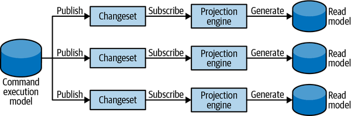
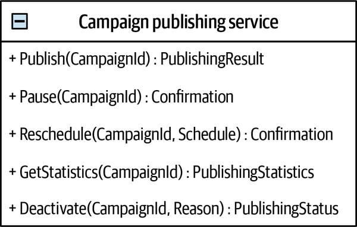

Source: Learning Domain-Driven Design by Vlad Khononov
Domain Driven Design
John Kidd
Domain Driven Design
What is it?
Domain Driven Design (DDD) is a set of tools that assist you in designing and implementing software that delivers high value, both strategically and tactically
DDD focus your attention on what your company or your team should be focused on
DDD has a strategic value in about mapping business domain concepts into software artifacts.
DDD is about organizing code artifacts in alignment with business problems, using the same common, ubiquitous language
DDD is about taking this business language, the ubiquitous language and creating models that represent the language and used to solve problems
What is it not?
DDD isn’t a methodology, it’s more about the software’s architectural design, providing a structure of practices to take design decisions that help in software projects that have complicated domains.
Wait, isn’t this Waterfall?
Domain-Driven Design encourages incremental development, not waterfall one.
DDD is about the understanding of the complex domain, and it simply cannot be fully discovered at one go.
DDD is incremental, learned, and adjusted over time
Advantages, Disadvantages
Advantages
Incremental & Flexibile
Organized: In code and teams
Focuses on the Domain
Disadvantages
Learning Curve
Time and Effort
Two Parts of DDD
- Strategic design
Answering the questions of “what?” and “why?”—what software we are building and why we are building it.
- Tactical design
About the “how”—how each component is implemented.
Are there times when I cannot use DDD?
This is a difficult question, and in the end it will be up to you and your team
Some things to consider:
Very simple projects where the domain is one to maybe ten different models. It might be overkill to use DDD (Opinion)
Regardless, thinking about domains and models is essential even if you and your team are not going through the entire DDD process
If you are in a large company, with many business roles, then DDD will give benefit and clarity
In the end, it depends, but you will find many aspects of DDD helpful in the large
Free Reference
Download a free DDD Reference from the DomainLanguage.com website
Domain Driven Design Crew
Visit the Domain Driven Design Crew’s website for starter kits and templates
Strategic
Analyzing Business Domains [Strategic]
Understanding the Problem
"Do we need to know this material? We are writing software, not running businesses.”
The answer to their question is a resounding “yes.”
To design and build an effective solution, you have to understand the problem.
The problem, in our context, is the software system we have to build.
To understand the problem, you have to understand the context within which it exists:
The organization’s business strategy
What value it seeks to gain by building the software.
Business Domain
Defines a company’s main area of activity, it’s primary business.
Generally speaking, it’s the service the company provides to its clients.
Examples include:
FedEx provides courier delivery.
Starbucks is best known for its coffee.
Walmart is one of the most widely recognized retail establishments
Ancillary Domains
A company can operate in multiple business domains.
For example:
Amazon provides both retail and cloud computing services.
Uber is a rideshare company that also provides food delivery and bicycle-sharing services.
It’s important to note that companies may change their business domains often!
Some examples:
Nokia - started off as a paper mill
Nintendo - stared off as a playing card service
Sony - Radio repair shop
McDonalds - Sold hot dogs
Subdomains
For a business domain’s goals and targets, a company has to operate in multiple subdomains
A subdomain is a fine-grained area of business activity
All of a company’s subdomains form its business domain: the service it provides to its customers
The subdomains have to interact with each other to achieve the company’s goals in its business domain
Real World Subdomains
Starbucks may be most recognized for its coffee
The successful coffeehouse chain requires more than just knowing how to make great coffee.
It also includes:
How to buy or rent real estate at effective locations
Hire personnel
Manage finances
Other activities
All subdomains are necessary for the complete business
Types of subdomains
Core
Generic
Supporting
Core Subdomain
A core subdomain is what a company does differently from its competitors
"Inventing new products or services"
"Reducing costs by optimizing existing processes"
"Ship products to hard-to-reach locations"
Core Subdomain Complexity
"A simple core subdomain is short-lived competitive advantage"
Core subdomains are:
Naturally complex
Hard for competitors to copy or imitate
Although core subdomains are complex, they don’t necessarily need to be technical
Generic Subdomains
Generic subdomains are business activities that all companies are performing in the same way.
Like core subdomains, generic subdomains are generally complex and hard to implement.
However, generic subdomains do not provide any competitive edge for the company.
There is no need for innovation or optimization here: battle-tested implementations are widely available, and all companies use them.
Generic Subdomain Distilled
For example, most systems need to authenticate and authorize their users.
Instead of inventing a proprietary authentication mechanism, it makes more sense to use an existing solution.
Such a solution is likely to be more reliable and secure since it has already been tested by many other companies that have the same needs.
Supporting Subdomain
Supporting subdomains support the company’s business.
However, contrary to core subdomains, supporting subdomains do not provide any competitive advantage.
Supporting Subdomain Distilled
Supporting subdomains are simple.
Their business logic resembles mostly data entry screens and ETL (extract, transform, load) operations; that is, the so-called CRUD (create, read, update, and delete) interfaces.
These activity areas do not provide any competitive advantage for the company, and therefore do not require high entry barriers.
Subdomain Differentiation

Volatility in Subdomains
- Core Subdomains
Change is often. If it can be solved in the first attempt it is not competitive. Evolution is constant.
- Supporting Subdomains
Do not change often. Does not provide any advantage. Evolution is minuscule.
- Generic Subdomains
The changes can come in the form of security patches, bug fixes, or entirely new solutions to the generic problems.
Implementation in Subdomains
- Core Subdomains
Core subdomains have to be implemented in-house. They cannot be bought or adopted; that would undermine the notion of competitive advantage. They cannot also be outsourced. They cannot be done by cutting corners. The most skilled talent works on the core subdomain. Should be easy to evolve.
- Supporting Subdomains
Rarely any supporting solutions are available but are often in-house. Supporting subdomains do not require highly skilled technical aptitude and provide a great opportunity to train up-and-coming talent.
- Generic Subdomains
Buy an off-the-shelf product or adopt an open source solution
Table Comparing the Domains
| Subdomain type | Competitive advantage | Complexity | Volatility | Implementation | Problem |
|---|---|---|---|---|---|
Core | Yes | High | High | In-house | Interesting |
Generic | No | High | Low | Buy/adopt | Solved |
Supporting | No | Low | Low | In-house/outsource | Obvious |
Identifying Subdomains and Boundaries
Next we answer the question, how do we identify the subdomains and their boundaries?
Determine or ask a domain expert what "divisions" the company may have, that may or may not provide enough information
Look towards company’s departments and other organizational units.
Distilling Subdomains
There could be finer-grained components that you may miss
If you find that "customer-service" is a subdomain, that subdomain can have other
For example, an online retail shop might include warehouse, customer service, picking, shipping, quality control, and channel management departments, among others.
Breaking down the "Customer-Service" Subdomain
- When viewed as individual subdomains, these activities can be of different types
Help desk and telephone systems can be generic subdomains
Shift management is a supporting one
Meanwhile, a company may develop its ingenious algorithm for routing incidents to agents having success with similar cases in the past..since this ends up competitive advantage this can be a core.
So we break things down. When do we stop?
Use cases are tightly bound by the data that they are using with the involved actors
“subdomains as a set of coherent use cases” - drill down until you have cohesive units and cohesive actors
The distillation can be somewhat relaxed for supporting and generic subdomains. If drilling down further doesn’t unveil any new insights that can help you make software design decisions, it can be a good place to stop
Do we even need the subdomains
After drilling through all the subdomains, do you really need them
It could be a great opportunity to determine if they are useful or may be going away
Focusing on the essentials
Subdomains are a tool that alleviates the process of making software design decisions
All organizations likely have quite a few business functionalities that drive their competitive advantage but have nothing to do with software
When looking for subdomains, it’s important to identify business functions that are not related to software, acknowledge them as such, and focus on aspects of the business that are relevant to the software system you are working on.
Domain Analysis Examples
Identifying Domain Experts
Domain experts are:
Subject-matter experts who know all the intricacies of the business that we are going to model and implement in code.
Knowledge authorities in the software’s business domain
Domain experts are not:
The analysts gathering the requirements
The engineers designing the system
Domain Experts Distilled
Domain experts are either the people coming up with requirements or the software’s end users
The software is supposed to solve their problems
Domain Experts and Scope
The domain experts’ expertise can have different scopes:
Some subject-matter experts will have a detailed understanding of how the entire business domain operates
Others will specialize in particular subdomains.
For example, in an online advertising agency, the domain experts would be:
Campaign managers
Media buyers
Analysts
Other business stakeholders
Lab: Analyzing Business Domains
Discovering Domain Knowledge [Strategic]
Grasping Knowledge of the Business Domain
We are perhaps not experts in the domain that we are designing for
We have to mimic the way that the experts perform their jobs
We have to understand the problem in order to solve it
Communication
Success depends on collaboration of stakeholders:
Product Owners
Domain Experts
Engineers
UI and UX Designers
Project Managers
etc.
Issues that arise with communication
Do all stakeholders agree on what problem is being solved?
Do they hold any conflicting assumptions about its functional and nonfunctional requirements?
Mediators in Communication
Communication is essential for success, but it is rarely observed
Business people and software engineers have no direct interaction with one another
Unfortunately communication from domain experts is filtered by "mediators and translators"
Who are the translators?
Systems/business analysts
Product owners
Project managers
Analysis Model
Taking domain knowledge and translating it into engineering friendly analysis model
The analysis model is the description of the system’s requirements rather than understanding the business domain
Mediation can be hazardous, domain knowledge that is essential for solving business problems gets lost on its way to the software engineers
Information can be distorted
Ubiquitous Language
Cornerstone of Domain Driven Design
A dictionary of the same language
A language for describing your business domain
Represents both the business domain and the domain experts’ mental models.
Ubiquitous Language Goals
Represent the companies terms only
No technical jargon (e.g. RestFUL, Patterns, Kubernetes)
Frame the domain experts' understanding and mental model
Make it easy to understand and eliminate assumptions
Example of Ubiquitous Language
"An advertising campaign can display different creative materials."
"A campaign can be published only if at least one of its placements is active."
"Sales commissions are accounted for after transactions are approved."
Example of Poor Understanding of Ubiquitous Language
"The advertisement iframe displays an HTML file."
"A campaign can be published only if it has at least one associated record in the active-placements table."
"Sales commissions are based on correlated records from the transactions and approved-sales tables."
Consistency
Each term of the Ubiquitous Language should have only one meaning
If it doesn’t it may fall into one of the following categories:
Ambiguous Terms
Synonymous Terms
Ambiguous Terms
Example: In business domain, the term policy has multiple meanings:
A regulatory rule
An insurance contract
Ubiquitous language demands a single meaning for each term
“policy” should be modeled explicitly using the two terms regulatory rule and insurance contract
Synonymous Terms
Two terms cannot be used interchangeably in a ubiquitous language
Example: user
User may be used interchangeably: user, visitor, administrator, account, etc.
What is a user?
One term can denote different concepts
visitor, account can refer to system users
uregistered and registered users represent different roles and different behaviors
Visitors are for analysis; Accounts are use the systems
Specific contexts
In the case of synonymous terms, it is preferrable to use the terms in it’s specific context
Understanding the differences between the terms depending on context allows for simpler and clearer models
Modeling
An effective model contains only the details needed to fulfill its purpose
The model is supposed to capture:
The domain experts’ mental models
Their thought processes about how the business works to implement its function
The involved business entities
Modeling Focus
Models are used to solve a problem, but are an abstraction
A world map will not show the subways
A subway map will not show the continents of the globe
“All models are wrong, but some are useful.” — George Box
"The purpose of abstracting is not to be vague but to create a new semantic level in which one can be absolutely precise." — Edsger W. Dijkstra
Modeling the Business Domain
The ubiquitous language we use is not supposed to cover every possible detail of the domain.
The model is supposed to include just enough aspects of the business domain to make it possible to implement the required system
To address the specific problem the software is intended to solve.
Where things can get tough
The larger the domain
The more communication
The harder it is to model and implement as code
The likelihood of misunderstanding
The likelihood of severe bugs
Continuous Effort
The only reliable way to verify a business domain’s understanding is to converse with domain experts with the ubiquitous language
Talking with domain experts can uncover inaccuracies, wrong assumptions, flawed understandings of the domain
The Ubiquitous Language should always be reinforced throughout the project
Everyday use of the language will reveal insights over time, and the language must evolve
Ubiqituous Language and Artifacts
- Ubiquitous Language should be used in
Requirements
Tests
Documentation
Source Code
Ubiquitous Language in a Glossary
A wiki to be used as a glossary to capture the ubiquitous language
It makes it easy to onboard new members with terms
It is a shared resource
Include nouns: names of entities, processes, roles, etc.
Include verbs: processes and behaviour
Using Gherkin and BDD to derive testing
Given the account has a balance of $23.95
When a message of "balance" comes in from a /known phone number/
Then a text is sent back: "Your balance is $23.95"
Given the account has a balance of $23.95
When any message comes in from a /UNKNOWN phone number/
Then log message and phone number, and do nothing
Given the account has a balance of $23.95
When any message other than "balance" comes in from a /known phone number/
Then send text back: "Didn't understand message, send BALANCE for current balance."Challenges
Defining Ubiquitous Language is not easy
Most knowledge is tacit: In the minds of the domain experts. Ask Questions
Brownfield Projects
There likely is a quasi-defined ubiquitous language that the stakeholders already use
It may not reflect the actual domain accurately
It may use technical terms, like database names
It is not easy to change a language already in use, be patient
Control it first in documentation and source code
Lab: Discovering Domain Knowledge
Managing Domain Complexity [Strategic]
Consistent & Inconsistent Models
Ubiquitous Language should be consistent since it will drive decisions
As companies scale, the domain experts' mental models will be inconsistent
Inconsistent Models
What if after examing domain expert’s language, you find that in two context there is overloaded term: lead?
- Marketing Department
For the marketing people, a lead represents a notification that somebody is interested in one of the products. The event of receiving the prospective customer’s contact details is considered a lead
- Sales Department
In the context of the sales department, a lead is a much more complex entity. It represents the entire lifecycle of the sales process. It’s not a mere event, but a long-running process
Dealing with Ambiguity
Uniquitous Language needs to be consistent - each term should have one meaning
Ubiquitous Language needs to map to domain experts' mental models
Having two leads isn’t a problem in communication, but it is in software
The Traditional Approach
The Traditional Approach for such modeling a single model
Typically defined by an enormous entity relationship (ERD)
"Suitable for everything but eventually are effective for nothing"
What about prefixing?
Can we do “marketing lead” and “sales lead"?
Allows for two different models of code
This has three main disadvantages:
Creates cognitive load. When should each be used? The closer they are the likely a mistake
The implementation will not be aligned with the ubiquitous languages
Does anyone use the prefixed terms in everyday language?
Introducing the Bounded Context
The solution:
Divide the Ubiquitous Language into multiple smaller languages
Assign each team to the explicit context in which it can be applied: its bounded context
Bounded Context by Example

Model Boundaries
A model is a construct that helps us makes sense of a complex system
It is supposed to solve an inherent part of a model - it’s purpose
A model cannot exist without a boundary
Purpose for boundaries
Just like types of maps - aerial, nautical, terrain, subway, and so on
One bounded context can be completely irrelevant to the scope of another
They allow distinct models according to different problem domains
Bounded contexts are the consistency boundaries of ubiquitous language
An Ubiquitous Language is not universal
Ubiquitous within a context
An ubiquitous language is ubiquitous only in the boundaries of its bounded context
The language is focused on describing only the model that is encompassed by the bounded context
An ubiquitous language cannot be defined or used without an explicit context of its applicability
We can narrow the scope of a bounded context
You can decompose bounded contexts into small based on language and relevancy
Defining bounded contexts is a strategic design decisions
Boundaries can be:
Wide - Following the business domain’s inherent contexts
Narrow - Further dividing the business domain into smaller problem domains
"Models shouldn’t necessarily be big or small. Models need to be useful."
So what is it? Small or Large Bounded Context?
The wider the boundary of the ubiquitous language is, the harder it is to keep it consistent.
It may be beneficial to divide a large ubiquitous language into smaller, more manageable problem domains
But, striving for small bounded contexts can backfire too.
The smaller they are, the more integration overhead the design induces
The decision, is based on your problem domain
More Reasons for Fine-Grained Bounded Contexts
Creating new software engineering teams or addressing some of the system’s nonfunctional requirements; for example, when you need to separate the development lifecycles of some of the components originally residing in a single bounded context
Ability to scale it independently from the rest of the bounded context’s functionalities
More Reasons for Coarse-Grained Bounded Contexts
Division will hinder the ability to evolve each context independently.
Instead, the same business requirements and changes will simultaneously affect the bounded contexts and require simultaneous deployment of the changes.
Identify sets of coherent use cases that operate on the same data and avoid decomposing them into multiple bounded contexts.
Bounded Contexts vs Subdomains
Subdomains
Recall identification of different subdomains: core, supporting, generic
Subdomains are interrelated use-cases and defined by the business domain and system requirements
Bounded Contexts
Designed - A strategic designed decision
We decide how to divide the business domain into smaller, manageable problem domains
Boundaries
- The bounded context pattern is the domain-driven design tool for defining boundaries
Physical
Ownership
Physical Boundaries
Each bounded context should be implemented as an individual service/project
It is implemented, evolved, and versioned independently of other bounded contexts
Clear physical boundaries between bounded contexts allow us to implement each bounded context with the technology stack that best fits its needs
A bounded context can contain multiple subdomains. In such a case, the bounded context is a physical boundary, ach of its subdomains is a logical boundary
Logical boundaries bear different names in different programming languages: namespaces, modules, or packages.
Ownership Boundaries
A bounded context should be implemented, evolved, and maintained by one team only
No two teams can work on the same bounded context
Segregation eliminates implicit assumptions that teams might make about one another’s models
Unidirectional Relationship of Bounded Contexts
A bounded context should be owned by only one team.
However, a single team can own multiple bounded contexts
Semantic Domains
How you and your team perceive domains is for you to decide.
Domains are semantic
e.g. a tomato
In botany - the tomato is a fruit
In culinary - the tomato is a vegetable
In taxation - In 1883 the United States established a 10% tax on imported vegetables, but not fruits, for taxation purposes, the tomato is a vegetable
In theatre - the tomato is a feedback mechanism
Event Storming [Strategic]
What is Event Storming?
Low-tech activity for a group of people to brainstorm and rapidly model a business process.
In a sense, EventStorming is a tactical tool for sharing business domain knowledge.
An EventStorming session has a scope: the business process that the group is interested in exploring.
The participants are exploring the process as a series of domain events, represented by sticky notes, over a timeline. Step by step, the model is enhanced with additional concepts—actors, commands, external systems, and others—until all of its elements tell the story of how the business process works.
Just keep in mind that the goal of the workshop is to learn as much as possible in the shortest time possible. We invite key people to the workshop, and we don’t want to waste their valuable time.
— Alberto Brandolini: Creator of the EventStorming workshop
Why?
When new domain knowledge is discovered, it should be leveraged to evolve the design and make it more resilient.
Unfortunately, changes in domain knowledge are not always positive: domain knowledge can be lost. As time goes by, documentation often becomes stale, people who were working on the original design leave the company, and new functionality is added in an ad hoc manner until, at one point, the codebase gains the dubious status of a legacy system.
It’s vital to prevent such degradation of domain knowledge proactively.
An effective tool for recovering domain knowledge is the EventStorming workshop
People
A diverse group of people should participate in the workshop.
Anyone related to the business domain in question can participate: engineers, domain experts, product owners, testers, UI/UX designers, support personnel, and so on.
As more people with different backgrounds are involved, more knowledge will be discovered.
Take care not to make the group too big, however.
Every participant should be able to contribute to the process, but this can be challenging for groups of more than 10 participants.
Requirements
- Modeling space
First, you need a large modeling space. A whole wall covered with butcher paper makes the best modeling space A large whiteboard can fit the purpose as well, but it has to be as big as possible—you will need all the modeling space you can get.
- Sticky notes
Next, you need lots of sticky notes of different colors. The notes will be used to represent different concepts of the business domain, and every participant should be able to add them freely, so make sure you have enough colors and enough for everyone. The colors that are traditionally used for EventStorming are described in the next section. It’s best to stick to these conventions, if possible, to be consistent with all of the currently available EventStorming books and trainings.
Requirements
- Markers
You’ll also need markers that you can use to write on the sticky notes. Again, supplies shouldn’t be a bottleneck for knowledge sharing—there should be enough markers for all participants.
- Snacks
A typical EventStorming session lasts about two to four hours, so bring some healthy snacks for energy replenishment.
- Room
Finally, you need a spacious room. Ensure there isn’t a huge table in the middle that will prevent participants from moving freely and observing the modeling space. Also, chairs are a big no-no for EventStorming sessions. You want people to participate and share knowledge, not sit in a corner and zone out. Therefore, if possible, take the chairs out of the room.
Step 1: Unstructured Exploration
EventStorming starts with a brainstorm of the domain events related to the business domain being explored.
A domain event is something interesting that has happened in the business.
It’s important to formulate domain events in the past tense —they are describing things that have already happened.
Step 1: Unstructured Exploration (Continued)
All participants are grabbing a bunch of orange sticky notes, writing down whatever domain events come to mind, and sticking them to the modeling surface.
There is no need to worry about ordering events, or even about redundancy
This step is all about brainstorming the possible things that can happen in the business domain
The group should continue generating domain events until the rate of adding new ones slows significantly.
Step 1: Unstructured Exploration (Continued)
Step 2: Timelines
Next, the participants go over the generated domain events and organize them in the order in which they occur in the business domain.
The events should start with the “happy path scenario”: the flow that describes a successful business scenario.
Once the “happy path” is done, alternative scenarios can be added—for example, paths where errors are encountered or different business decisions are taken.
The flow branching can be expressed as two flows coming from the preceding event or with arrows drawn on the modeling surface
This step is also the time to fix incorrect events, remove duplicates, and of course, add missing events if necessary.
Step 2: Timelines (Continued)
Step 3: Pain Points
Once you have the events organized in a timeline, use this broad view to identify points in the process that require attention.
These can be bottlenecks, manual steps that require automation, missing documentation, or missing domain knowledge.
It’s important to make these inefficiencies explicit so that it will be easy to return to them as the EventStorming session progresses, or to address them afterward.
The pain points are marked with rotated (diamond) pink sticky notes
As a facilitator, be aware of the participants’ comments throughout the process. When an issue or a concern is raised, document it as a pain point
Step 3: Pain Points (Continued)
Step 4: Pivotal Events
Once you have a timeline of events augmented with pain points, look for significant business events indicating a change in context or phase.
These are called pivotal events and are marked with a vertical bar dividing the events before and after the pivotal event.
For example, “shopping cart initialized,” “order initialized,” “order shipped,” “order delivered,” and “order returned” represent significant changes in the process of making an order
Pivotal events are an indicator of potential bounded context boundaries
Step 5: Commands
Whereas a domain event describes something that has already happened, a command describes what triggered the event or flow of events.
Commands describe the system’s operations and, contrary to domain events, are formulated in the imperative.
Publish campaign
Roll back transaction
Submit order
Step 5: Commands (Continued)
Commands are written on light blue sticky notes and placed on the modeling space before the events they can produce.
If a particular command is executed by an actor in a specific role, the actor information is added to the command on a small yellow sticky note
The actor represents a user persona within the business domain, such as customer, administrator, or editor.
Naturally, not all commands will have an associated actor.
Therefore, add the actor information only where it’s obvious
Step 5: Commands (Continued)
Step 6: Policies
Some commands are added to the model but have no specific actor associated with them.
During this step, you look for automation policies that might execute those commands.
An automation policy is a scenario in which an event triggers the execution of a command
Policies are represented as purple sticky notes connecting events to commands
Example: You need to trigger the escalate command after the “complaint received” event, but only if the complaint was received from a VIP customer, you can explicitly state the “only for VIP customers” condition on the policy sticky
Step 6: Policies (Continued)
| If the events and commands are far apart, you can draw an arrow on the modeling surface to connect them. |
Step 7: Read Models
A read model is the view of data within the domain that the actor uses to make a decision to execute a command.
This can be one of the system’s screens, a report, a notification, and so on.
The read models are represented by green sticky notes with a short description of the source of information needed to support the actor’s decision
Since a command is executed after the actor has viewed the read model, on the modeling surface the read models are positioned before the commands
Step 7: Read Models (Continued)
Step 8: External Systems
This step is about augmenting the model with external systems.
An external system is defined as any system that is not a part of the domain being explored.
It can execute commands (input) or can be notified about events (output).
The external systems are represented by pink sticky notes.
By the end of this step, all commands should either be executed by actors, triggered by policies, or called by external systems
Step 8: External Systems (Continued)
Step 9: Aggregates
Once all the events and commands are represented, the participants can start thinking about organizing related concepts in aggregates.
An aggregate receives commands and produces events.
Aggregates are represented as large yellow sticky notes, with commands on the left and events on the right
Step 10: Bounded Contexts
The last step of an EventStorming session is to look for aggregates that are related to each other, either because they represent closely related functionality or because they’re coupled through policies
The groups of aggregates form natural candidates for bounded contexts’ boundaries
Step 10: Bounded Contexts (Continued)
Variations
Alberto Brandolini, the creator of the EventStorming workshop, defines the EventStorming process as guidance, not hard rules.
You are free to experiment with the process to find the “recipe” that works best for you.
The real value of an EventStorming session is the process itself—the sharing of knowledge among different stakeholders, alignment of their mental models of the business, discovery of conflicting models, and, last but not least, formulation of the ubiquitous language.
Keep a legend around
Watch the dynamics
Watch the energy. If there is slowdown reignite with questions or move to the next stage
Ensure that the entire group is present. Involve even those that are reluctant to participate
Ensure that you take breaks and ready for collaboration
Five (Preferable) to Ten participants is optimal, if more needed break up into teams and compare notes
Lab: Event Storming
Integrating Bounded Contexts [Strategic]
Contracts
A system cannot be built out of independent components, the components have to interact with one another to achieve the system’s overarching goals
The same goes for implementations in bounded contexts.
Although they can evolve independently, they have to integrate with one another
These are called contracts
Contract Between Contracts
By definition, two bounded contexts are using different ubiquitous languages.
Which language will be used for integration purposes?
These integration concerns should be evaluated and addressed
Cooperation
Cooperation patterns relate to bounded contexts implemented by teams with well-established communication.
They are either:
The same team
Two teams very tightly coordinated
Partnership
Integration between bounded contexts is coordinated in an ad hoc manner
One team can notify a second team about a change in the API, and the second team will cooperate and adapt—no drama or conflicts
Partnership Coordination
Coordination is two-way
No one team dictates the language that is used for defining the contracts
Teams work out the differences and choose the most appropriate solution
Both cooperate, and neither is interest in blocking another
Partnership Requirements
Commitment
Constant Communication
Continuous Integration to minimize the integration feedback loop
Both teams should highly likely be geographically in the same location
Shared Kernel/Model
Same model of a subdomain, or a part of it, implemented in multiple bounded contexts
Designed according to the needs of all of the bounded contexts
Consistent across all of the bounded contexts that are using it
Shared Kernel/Model
Example: Custom Authentication/Authorization module used by separate bounded contexts
Each bounded context can modify the authorization model, and the changes each bounded context applies have to affect all the other bounded contexts using the model
To minimize the cascading effects of changes, the overlapping model should expose only that part of the model that has to be implemented by both bounded contexts
Consist only of integration contracts and data structures that are intended to be passed across the bounded contexts’ boundaries
Implementation of Shared Kernel
In a mono-repo: these can be the same source files referenced by multiple bounded contexts
In a dedicated-repo: shared kernel can be extracted into a dedicated project and referenced in the bounded contexts as a linked library
Shared Kernel and Continuous Integration
Continuous Integration of changes is required because the shared kernel belongs to multiple bounded contexts
Not doing so will cause stale implementations leading to data corruption or runtime issues
When to use shared kernel?
It should be applied only when the cost of duplication is higher than the cost of coordination
In other words, only when integrating changes applied to the shared model by both bounded contexts will require more effort than coordinating the changes in the shared codebase
Using a shared kernel violates the independence rule of bounded context, and therefore, should be justified
Shared Kernel can be used as a temporary measure to migrate one legacy application into multiple bounded-contexts
Shared Kernel can be used as a temporary measure to integrate multiple bounded contexts owned by the same team
If a lot of model code ends up in the shared kernel, it may be a sign that the contexts should, in fact, be merged into one big context
Customer-Supplier
The service provider is “upstream” and the customer or consumer is “downstream.”
Both teams (upstream and downstream) can succeed independently
Imbalance of power: either the upstream or the downstream team can dictate the integration contract
This is where a decision should be made about the relationship
Conformist
Balance of power favors the upstream team, no real motivation to support the client
Upstream provides the integration contract, defined according to its own model—take it or leave it
Caused by integration with service providers that are external to the organization or simply by organizational politics
The contract exposed by the upstream team may be an industry-standard, well-established model, or it may just be good enough for the downstream team’s needs.
Anti-Corruption Layer
The balance of power in this relationship is still skewed toward the upstream service.
In this case, the downstream bounded context is not willing to conform.
Instead, it translates the upstream bounded context’s model into a model tailored to its own needs via an anticorruption layer
Reasons for Anti-Corruption Layer
A core subdomain’s model requires extra attention, and adhering to the supplier’s model might impede the modeling of the problem domain.
When the upstream model is inefficient or inconvenient for the consumer’s needs
If a bounded context conforms to a mess, it risks becoming a mess itself (legacy systems)
When the supplier’s contract changes often, the consumer wants to protect its model from frequent changes
Open Host Service
Power is toward the consumers
Supplier is interested in protecting its consumers and providing the best service possible.
Upstream supplier decouples the implementation model from the public interface.
Allows the supplier to evolve its implementation and public models at different rates
The supplier exposes a protocol convenient for the consumers
Published Language
Publicly used to communicate and integrate between different Bounded Contexts.
They also have an agreed-meaning across Bounded Contexts.
Mainly used by engineers working in different Bounded Contexts to agree on integration approach (open-host, client-server, pub-sub, etc.).
Mainly expressed via technical format (API, JSON, XML, Protocol Buffer, etc.)
Open Host Service
Upstream bounded context the freedom to evolve its implementation without affecting the downstream contexts
Possible if the modified implementation model can be translated into the published language the consumers are already using
Open Host Service Multiple Protocols
Integration model’s decoupling allows the upstream bounded context to simultaneously expose multiple versions of the published language
Allowing the consumer to migrate to the new version gradually
Separate Ways / Free
- Last option or pattern is not to collaborate at all for the following reasons
Communication Issues
Generic Subdomains
Model Differences
Communication Issues
Organization Size and Politics hinders collaboration
Teams may have a hard time collaborating
It may be more cost-effective to go their separate ways and duplicate functionality in multiple bounded contexts
Generic Subdomains
When the subdomain in question is generic, and if the generic solution is easy to integrate, it may be more cost-effective to integrate it locally in each bounded context.
An example is a logging framework; it would make little sense for one of the bounded contexts to expose it as a service.
Duplicating the functionality would be less expensive than collaborating.
Model Differences
The models may be so different that a conformist relationship is impossible
Implementing an anticorruption layer would be more expensive than duplicating the functionality
Creating a Context Map
Context map is a visual representation of the system’s bounded contexts and the integrations between them
Benefits to a Context Map
Provides an overview of the system’s components and the models they impelment
Exhibits the communication patterns among teams and which teams are tight
Gives insight to organizational issues, forces questions and thought
Maintenance
- Context Maps should be
Introduced from the beginning
Updated to reflect additions and changes
A shared effort where each team updates its own integrations
Context Mapper
A context map can be managed and maintained as code, using a tool like Context Mapper
Limitations
Context Maps can be challenging
When bounded contexts encompass multiple subdomains, there can be multiple integration patterns at play
Also, if bounded contexts are limited to a single subdomain, there still can be multiple integration patterns at play
For example, if the subdomains’ modules require different integration strategies.
Lab: Integrating Bounded Contexts
Tactical
Simple Business Logic [Tactical]
Business Logic
Business logic is the most important part of software
You can have the most amazing UI and fast database but if the software is not useful it is a failure
We will visit two simplic business logic patterns:
Transaction Script
Active Record
Transaction Script
Organizes business logic by procedures where each procedure handles a single request from the presentation
A system’s public interface can be seen as a collection of business transactions that consumers can execute
Transactions can retrieve information managed by the system, modify it, or both
Pattern organizes the system’s business logic based on procedures
Each procedure implements an operation that is executed by the system’s consumer via its public interface
Public operations are used as encapsulation boundaries
Example of Public Transaction Script Interface
Implementation of Transaction Script
Each procedure is implemented as a simple, straightforward procedural script
It can use a thin abstraction layer for integrating with storage mechanisms, but it is also free to access the databases directly
Each operation should either succeed or fail but can never result in an invalid state
During failure: System should remain consistent—either by rolling back any changes it has made up until the failure or by executing compensating actions
Example of Transaction Script
db.startTransaction();
var job = db.loadNextJob();
var json = loadFile(job.source);
var xml = convertJsonToXml(json);
writeFile(job.Destination, xml.ToString();
dd.markJobAsCompleted(job);
dd.commit()Three Cause of Data Corruption with Transaction Script
There are three causes of data corruption with Transaction Script
Lack of transactional behavior
Distributed transactions
Implicit distributed transactions
Lack of Transactional Behavior
public class LogVisit {
public void execute(Guid userId, DataTime visitedOn)
{
db.executeStatement("UPDATE Users SET last_visit= ? WHERE user_id= ?",
visitedOn, userId);
db.executeInsert("INSERT INTO VisitsLog(user_id, visit_date) VALUES(?, ?)", userId, visitedOn);
}
}Issues of Not including Transactions
If any issue occurs after the record in the
Userstable was updated but before appending the log record on line succeeds, the system will end up in an inconsistent state.The
Userstable will be updated but no corresponding record will be written to theVisitsLogtable.The issue can be due to anything from a network outage to a database timeout or deadlock, or even a crash of the server executing the process.
Including Transactions
public class LogVisit {
public void execute(Guid userId, DataTime visitedOn) {
try
{
db.startTransaction();
db.execute("UPDATE Users SET last_visit=? WHERE user_id=?",
visitedOn, userId);
db.execute("INSERT INTO VisitsLog(user_id, visit_date) VALUES(?, ?)",
userId, visitedOn);
db.commit();
} catch {
db.rollback();
throw new RuntimeException("Transaction Unsuccessful");
}
}
}Distributed Transactions
It’s a common practice to make changes to the data in a database and then notify other components of the system about the changes by publishing messages into a message bus.
Instead of logging a visit in a table, we have to publish it to a message bus or pub/sub
public class LogVisit {
public void execute(Guid userId, DataTime visitedOn)
{
db.execute("UPDATE Users SET last_visit=? WHERE user_id=?",
visitedOn, userId);
messageBus.Publish("VISITS_TOPIC",
new VisitRecord(userId, visitedOn));
}
}Distributed Transaction are difficult
Distributed transactions spanning multiple storage mechanisms are complex, hard to scale, error prone, and therefore are usually avoided
Some Patterns to use:
Outbox Pattern
CQRS (Command Query Responsibility Separation)
Implicit Distributed Transactions
The following is an implicit transaction and can lead to inconsistent state
public class LogVisit { public void execute(Guid userId) { db.execute("UPDATE Users SET visits=visits+1 WHERE user_id=?", userId); } }It is a distributed transaction because it communicates information to the databases and the external process that called the method
What could go wrong?
Any of the above links/arrows can fail
LogVisitis part of a REST service and there is a network outageBoth
LogVisitand the caller are running in the same process, but the process fails before the caller gets to track successful execution of theLogVisitactionThe consumer will assume failure and try calling LogVisit again.
Executing the
LogVisitlogic again will result in an incorrect increase of the counter’s value
Attempting to fix the issue with idempotency
Make the call idempotent, no matter how many times it’s called, you get the same effect
In the following attempt, we are submitting the execute method with the value that is required
public class LogVisit {
public void execute(Guid userId, long visits)
{
db.execute("UPDATE Users SET visits = ? WHERE user_id=?",
visits, userId);
}
}Attempting to fix the issue with optimisitic concurrency
Prior to calling the LogVisit operation, the caller has read the counter’s current value and passed it to
LogVisitas a parameter.LogVisitwill update the counter’s value only if it equals the one initially read by the callerKnown in Java, as
compareAndSet(CAS)
public class LogVisit {
public void execute(Guid userId, long expectedVisits) {
db.execute("UPDATE Users SET visits=visits+1 WHERE user_id = ? and visits = ?",
userId, visits);
}
}When to use Transaction Script
- The transaction script pattern is well adapted for
Business logic resembles simple procedural operations
Used as an adapter for integration with external systems—for example, generic subdomains, or as a part of an anticorruption layer
- The transaction script pattern is not well adapted for
Complexity- The more complex the business logic gets, the more it’s prone to duplicate business logic across transactions, and consequently, to result in inconsistent behavior
Core Subdomains - Won’t cope with the high complexity of a core subdomain’s business logic
Active Record
An object that wraps a row in a database table or view, encapsulates the database access, and adds domain logic on that data
Active record supports cases where the business logic is simple
Business logic may operate on more complex data structures which is different than transaction script
Active record also supports complicated trees and hierarchies
Doing something like the following diagram would make it so complicated for something like a transaction script which leads to repetitive code
Example of a Complex Active Record Structure
Implmentation of Active Record
Active Record uses dedicated objects, known as active records, to represent complicated data structures
Active Record objects also implement data access methods for creating, reading, updating, and deleting records—the so-called CRUD operations
Active record objects are coupled to an object-relational mapping (ORM) or some other data access framework
Example of Active Record
public class CreateUser {
public void execute(UserDetails userDetails) {
try {
db.startTransaction();
var user = new User();
user.setName(userDetails.getName());
user.setEmail(userDetails.getEmail());
user.save();
db.commit();
} catch {
db.rollback();
throw new RuntimeException("Unable to persist the Users");
}
}
}Advantages and Disadvantage to Active Record
- Advantage
Active record is essentially a transaction script that optimizes access to databases
Can only support relatively simple business logic, such as CRUD operations, which, at most, validate the user’s input
- Disadvantage
It can potentially introduce more harm than good when applied in the wrong context
It can be considered an anti-pattern, since it mixes two concerns, domain and repository
Lab: Simple Business Logic
Complex Business Logic [Tactical]
History
Transaction script and active record patterns, the domain model pattern was introduced initially in Martin Fowler’s book Patterns of Enterprise Application Architecture
Fowler mentioned that “Eric Evans is currently writing a book on building Domain Models” referring to Domain Driven Design that we talk about today
Eric Evans talked about other patterns: Aggregates, Entities, Value Objects etc. This takes off from Martin Fowler left off.
Domain Model
The domain model pattern is intended to cope with cases of complex business logic.
Instead of CRUD, we deal with complex state transitions, business rules, and invariants
Example Complexity
Customers open support tickets describing issues they are facing.
Both the customer and the support agent append messages, and all the correspondence is tracked by the support ticket.
Each ticket has a priority: low, medium, high, or urgent.
An agent should offer a solution within a set time limit (SLA) that is based on the ticket’s priority
If the agent doesn’t reply within the SLA, the customer can escalate the ticket to the agent’s manager.
Escalation reduces the agent’s response time limit by 33%.
Example Complexity
If the agent didn’t open an escalated ticket within 50% of the response time limit, it is automatically reassigned to a different agent.
Tickets are automatically closed if the customer doesn’t reply to the agent’s questions within seven days.
Escalated tickets cannot be closed automatically or by the agent, only by the customer or the agent’s manager.
A customer can reopen a closed ticket only if it was closed in the past seven days.
Review the list
We see that there is a complex list of invariants
Using Active Records will make this unwieldly and include many duplicates
Implementation of the Domain Model
A domain model is an object model of the domain that incorporates both behavior and data
DDD’s tactical patterns — aggregates, value objects, domain events, and domain services— are the building blocks of such an object model.
All of these patterns share a common theme: they put the business logic first
Don’t Add More Complexity
The Domain Objects are already going to model a business process that’s already complex, so it shouldn’t introduce more complexity
When defining the domain: The model should be devoid of any infrastructural or technological concerns, such as implementing calls to databases or other external components of the system. They should not incorporate frameworks or infrastructure
They should be Plain Old Objects
Ubiquitous Language
It is important to follow the terminology of the bounded context’s ubiquitous language
Domain Model allows the code to “speak” the ubiquitous language and to follow the domain experts’ mental models
Value Objects
A value object is an object that can be identified by the composition of its values
No identifier is necessary, like
id = 10which would lead to confusion
public class Color {
private int red;
private int green;
private int blue;
}Identifiers doesn’t go into Value Objects
Note that because identifier were introduced:
3, and4are the same colorThis would not be considered a value object
Value Objects as Java Records
In Java, value objects can be simple one-liners.
They are immutable, and readily have
toString,equals,hashCode
public record Color(int red, int green, int blue) {}Primitive Obsession
Relying exclusively on the language’s standard library’s primitive data types—such as strings, integers, lists, or dictionaries — to represent concepts of the business domain is known as the primitive obsession code smell
Example Primitive Obsession Code Smell
class Person {
private int id;
private String firstName;
private String lastName;
private String landlinePhone;
private String mobilePhone;
private String email;
private int heightMetric;
private String countryCode;
public Person(...) {...}
}What’s wrong with primitive obsession?
Consider
landLineandcountryCode, what are the valid numbers?How are you protecting those values?
If there are multiple phone number types each validation may be duplicated.
Without Primitive Obsession
The benefit is that any validation is done at the value object level
Another benefit is that any method that is related belongs to the value object
It adheres to the ubiquitous language
class Person {
private PersonId id;
private Name name;
private PhoneNumber landline;
private PhoneNumber mobile;
private EmailAddress email;
private Height height;
private CountryCode country;
public Person(...) { ... }
}Value Objects creates Rich Intuitive Methods
var heightMetric = Height.metric(180);
var heightImperial = Height.imperial(5, 3);
var string1 = heightMetric.toString() // "180cm"
var string2 = heightImperial.toString(); // "5 feet 3 inches"
var string3 = heightMetric.toImperial().toString(); // "5 feet 11 inches"
var firstIsHigher = heightMetric.isGreaterThan(heightImperial); // trueValue Object as Mixing Colors
var red = Color.fromRGB(255, 0, 0);
var green = Color.Green;
var yellow = red.mixWith(green);
var yellowString = yellow.toString();Implementation and Immutability
Value objects are immutable
When a change is made to a value object, it typically should return another object with that change
Example of Immutability with Color
public record Color(int red, int green, int blue) {
public Color {
// Validate the input
}
public Color mixedWith(Color other) {
return new Color(
Math.min(this.red + other.red, 255),
Math.min(this.green + other.green, 255),
Math.min(this.blue + other.blue, 255)
);
}
}When to use Value Objects
Whenever you can
Benefit is that they are free of side-effects and are thread safe
Consider value objects for the domain’s elements that describe properties of other objects
Consider value objects for
firstName,lastName,expirationDate, passwords, temperature, and (especially) moneyLook for libraries that have that pre-developed, for example the Squants project in Scala
Language are optimizing for value objects
Language have or planning to optimize for having and using value objects
Consider some of the advancements planned for Java
Entities
An entity is the opposite of a value object.
It requires an explicit identification field to distinguish between the different instances of the entity.
Values Objects don’t have identity
In the following example, this is just a standard value object containing another value object
As we all know people can have the same name, so how do we distinguish between two of these objects?
public class Person { private Name name; public Person(Name name) { this.name = name; } }
Adding an identity
To distinguish between people we need an identifier:
EmployeeID,SocialSecurityNumber, etc.The identifier field should be immutable since a person’s identifier should remain constant, eventhough their name can change
Identifiers must be unique
public class Person {
private final PersonId id;
private Name name;
public Person(PersonId id, Name name) {
this.name = name;
}
}Example of two distinct people
Entities are not immutable
Entities are not immutable, they are expected to change
The value objects that constitute the entities are immutable
Entities are not formally a part of the domain model, because they are building block for creating aggregates
Aggregates
Aggregates are entities
It requires explicit identification
Draws a clear boundary between aggregate and it’s outer scope
Aggregate’s logic has to validate all incoming modifications and ensure that the changes do not contradict its business rules
Aggregates protect the data
Consistency of the data is enforced by the aggregate
Processes or objects external to the aggregate are only allowed to read the aggregate’s state
State can only be mutated by executing corresponding methods of the aggregate’s public interface
Commanding the Aggregate
State modifying methods exposed as the aggregate’s public interface are referred to as commands
You can implement commands by:
Using a public method
As a parameter object
Using the command pattern
Using a public method
public class Ticket
{
public void addMessage(UserId from, String body)
{
var message = new Message(from, body);
this.messages.append(message);
}
}Using it as a parameter object
A parameter object is a collection of other attributes
This is used to keep parameters nice and light
public class Ticket
{
public void execute(AddMessage cmd)
{
var message = new Message(cmd.from, cmd.body);
_messages.append(message);
}
}Using the Command Pattern
Command Pattern is from the classic Gang of Four design pattern
This allows for flexible use of commands where those commands are in a hash table
public class Ticket {
private HashSet<Action, Command> table;
public void execute(Action action) {
Optional.fromNullable(table.get(action))
.ifPresentOrElse(a -> a.perform(),
() -> throw new RuntimeException(...));
}
}Enforcement of Aggregates
An aggregate’s public interface is responsible for validating the input and enforcing all of the relevant business rules and invariants
Strict boundary also ensures that all business logic related to the aggregate is implemented in one place: the aggregate itself
Integration with the application layer
Integrating aggregates can then be done in the application layer
In the following example, a repository represents the storage facility
The consistency of the aggregate must be protected, transactionally, and concurrently
public ExecutionResult Escalate(TicketId id, EscalationReason reason) {
try {
var ticket = ticketRepository.load(id);
var cmd = new Escalate(reason);
ticket.execute(cmd);
ticketRepository.save(ticket);
return ExecutionResult.Success();
} catch (TransactionException ex) {
return ExecutionResult.Error(ex);
}
}Compare and Set Database Versions for consistency
When using databases consider using versions for consistency
Multiple processes are concurrently updating the same aggregate, we have to prevent the latter transaction from overwriting the changes committed by the first one
class Ticket { TicketId id; int version; //Database version }Integrating the a SQL style database
UPDATE tickets SET ticket_status = ?, agg_version = agg_version + 1 WHERE ticket_id=? and agg_version=?;
Transaction Boundary
The aggregate also acts as a transactional boundary
Aggregate’s state can only be modified by its own business logic, the aggregate also acts as a transactional boundary
All changes to the aggregate’s state should be committed transactionally as one atomic operation
If an aggregate’s state is modified, either all the changes are committed or none of them is
No multi-aggregate transactions
No system operation can assume a multi-aggregate transaction.
A change to an aggregate’s state can only be committed individually, one aggregate per database transaction.
What if we need to handle multiple entities?
The one aggregate instance per transaction forces us to carefully design an aggregate’s boundaries, ensuring that the design addresses the business domain’s invariants and rules.
The need to commit changes in multiple aggregates signals a wrong transaction boundary, and hence, wrong aggregate boundaries.
What if we need to modify multiple objects in the same transaction?
Hierarchy of Entities
DDD prescribes that a system’s design should be driven by its business domain
To support changes to multiple objects that have to be applied in one atomic transaction, the aggregate pattern resembles a hierarchy of entities, all sharing transactional consistency
The hierarchy contains both entities and value objects, and all of them belong to the same aggregate if they are bound by the domain’s business logic
Example of Hierarchy of Entities
public class Ticket {
private List<Message> messages;
public void execute(evaluateAutomaticActions cmd) {
if (this.isEscalated && this.remainingTimePercentage < 0.5 &&
getUnreadMessagesCount(assignedAgent) > 0) {
agent = AssignNewAgent();
}
}
public int getUnreadMessagesCount(UserId id) {
return messages.filter(x -> x.to == id && !x.wasRead).toList().size();
}
}Example of Hierarchy of Entities
The method in the previous slide, checks the ticket’s values to see whether it is escalated and whether the remaining processing time is less than the defined threshold of 50%
It checks for messages that were not yet read by the current agent
If all conditions are met, the ticket is requested to be reassigned to a different agent
The aggregate ensures that all the conditions are checked against strongly consistent data
Referencing other aggregates
Since all objects contained by an aggregate share the same transactional boundary, performance and scalability issues may arise if an aggregate grows too large.
The consistency of the data can be a convenient guiding principle for designing an aggregate’s boundaries.
Only the information that is required by the aggregate’s business logic to be strongly consistent should be a part of the aggregate
Aggregate as Consistency Boundary
Keep Aggregates Small
Keep the aggregates as small as possible and include only objects that are required to be in a strongly consistent state by the aggregate’s business logic
In the following code example, notice that we are not interested in the entire
Productnor the entireUser, just their identifiers (entities)public class Ticket { private UserId customer; private List<ProductId> products; private UserId assignedAgent; private List<Message> messages; }Reasoning behind referencing external aggregates by ID is to reify that these objects do not belong to the aggregate’s boundary, and to ensure that each aggregate has its own transactional boundary.
Deciding What to Aggregate
To decide whether an entity belongs to an aggregate or not, examine whether the aggregate contains business logic that can lead to an invalid system state if it will work on eventually consistent data
Aggregate Root
An aggregate’s state can only be modified by executing one of its commands.
Since an aggregate represents a hierarchy of entities, only one of them should be designated as the aggregate’s public interface—the aggregate root
Example of an Aggregate Root
public class Ticket {
private List<Message> _messages;
public void execute(AcknowledgeMessage cmd) {
var message =
messages.stream().filter(x -> x.id == cmd.id)
.findFirst().ifPresent(m -> m.wasRead = true);
}
}Domain Events
A domain event is a message describing a significant event that has occurred in the business domain, for example:
Ticket assigned
Ticket escalated
Message received
Domain events are past tense
Domain Event Example
{
"ticket-id": "c9d286ff-3bca-4f57-94d4-4d4e490867d1",
"event-id": 146,
"event-type": "ticket-escalated",
"escalation-reason": "missed-sla",
"escalation-time": 1628970815
}| Ensure that domain events succinctly reflect exactly what has happened in the business domain |
Domain Events Public Interface
Domain Events are part of the aggregate’s public interface
An aggregate publishes its domain events
Other processes, aggregates, or even external systems can subscribe to and execute their own logic in response to the domain events
Domain Event Example
public class Ticket {
private List<DomainEvent> domainEvents;
public void execute(RequestEscalation cmd)
{
if (!this.isEscalated && this.remainingTimePercentage <= 0) {
this.isEscalated = true;
var escalatedEvent = new TicketEscalated(id, cmd.Reason);
domainEvents.append(escalatedEvent);
}
}
}| We will see how we can use communication software to manage those events |
Aggregates must reflect the ubiquitous language
Aggregates should reflect the ubiquitous language.
The terminology that is used for the aggregate’s name, its data members, its actions, and its domain events all should be formulated in the bounded context’s ubiquitous language.
As Eric Evans put it, the code must be based on the same language the developers use when they speak with one another and with domain experts. This is especially important for implementing complex business logic
Domain Services
Business logic that doesn’t belong to any aggregate or value object, or that seems to be relevant to multiple aggregates
Stateless object that orchestrates calls to various components of the system to perform some calculation or analysis
Domain Service Example
In the following example, calculation logic requires information from multiple sources
public class ResponseTimeFrameCalculationService {
public ResponseTimeframe calculateAgentResponseDeadline(UserId agentId,
Priority priority, bool escalated, DateTime startTime) {
var policy = departmentRepository.getDepartmentPolicy(agentId); (1)
var maxProcTime = policy.getMaxResponseTimeFor(priority); (2)
if (escalated) {
maxProcTime = maxProcTime * policy.escalationFactor;
}
var shifts = departmentRepository.getUpcomingShifts(agentId,
startTime, startTime.Add(policy.MaxAgentResponseTime)); (1)
return CalculateTargetTime(maxProcTime, shifts);
}
}| 1 | The assigned agent’s department |
| 2 | The policy calculator |
Domain Services are not Microservice
Domain services have nothing to do with microservices, service-oriented architecture, or almost any other use of the word service in software engineering.
It is just a stateless object used to host business logic.
Factories
An object or method that implements object creation logic that’s too complex to be done directly by a constructor. It can also hide the concrete classes that are instantiated. A factory might be implemented as a static method of a class.
Repositories
An object that provides access to persistent entities and encapsulates the mechanism for accessing the database.
Lab: Complex Business Logic
Modeling Time [Tactical]
Analyzing Tabular Data
One can analyze data and get a feel for any process by looking at a table
Table representations only capture one moment in time, not the data that lead up to it
For example, your checking account. You know your balance, but how did it get there?
View the Data
| lead-id | first-name | last-name | status | phone-number | followup-on | created-on | updated-on |
|---|---|---|---|---|---|---|---|
|
|
|
|
|
|
| |
|
|
|
|
|
|
| |
|
|
|
|
|
|
| |
|
|
|
|
|
|
| |
|
|
|
|
|
|
|
|
What we understood
The sales flow starts with the potential customer in the
NEW_LEADstatus.A sales call can end with the person not being interested in the offer (the lead is
CLOSED), scheduling a follow-up call (FOLLOWUP_SET), or accepting the offer (PENDING_PAYMENT).If the payment is successful, the lead is
CONVERTEDinto a customer. Conversely, the payment can fail—PAYMENT_FAILED
Missing Information
- Since we don’t have the information that lead to this point, we might be missing valuable information!
Was there a purchase made right away?
Was there a lengthy sales journey?
Is it worth trying to contact a person after multiple follow-ups, or is it more efficient to close the lead and move to a more promising prospect?
None of that information is there. All we know are the leads’ current states.
Event Sourcing
The event sourcing pattern introduces the dimension of time into the data model.
Instead of the schema reflecting the aggregates’ current state, an event sourcing–based system persists events documenting every change in an aggregate’s lifecycle
Viewing the History
Note that all the data are of the same
lead-idWe can build a history of how we got to our current point, review this and build a mental picture of it’s history
{
"lead-id": 12,
"event-id": 0,
"event-type": "lead-initialized",
"first-name": "Casey",
"last-name": "David",
"phone-number": "555-2951",
"timestamp": "2020-05-20T09:52:55.95Z"
},
{
"lead-id": 12,
"event-id": 1,
"event-type": "contacted",
"timestamp": "2020-05-20T12:32:08.24Z"
},
{
"lead-id": 12,
"event-id": 2,
"event-type": "followup-set",
"followup-on": "2020-05-27T12:00:00.00Z",
"timestamp": "2020-05-20T12:32:08.24Z"
},
{
"lead-id": 12,
"event-id": 3,
"event-type": "contact-details-updated",
"first-name": "Casey",
"last-name": "Davis",
"phone-number": "555-8101",
"timestamp": "2020-05-20T12:32:08.24Z"
},
{
"lead-id": 12,
"event-id": 4,
"event-type": "contacted",
"timestamp": "2020-05-27T12:02:12.51Z"
},
{
"lead-id": 12,
"event-id": 5,
"event-type": "order-submitted",
"payment-deadline": "2020-05-30T12:02:12.51Z",
"timestamp": "2020-05-27T12:02:12.51Z"
},
{
"lead-id": 12,
"event-id": 6,
"event-type": "payment-confirmed",
"status": "converted",
"timestamp": "2020-05-27T12:38:44.12Z"
}Projecting from the events
Aggregating from the Domain events can be projected
That can be done by applying all the events in one construct
public class LeadModelProjection {
private long leadId;
private String firstNames;
private String lastNames;
private PhoneNumber phoneNumber;
private int version;
public void apply(LeadInitialized event) {
leadId = event.leadId;
firstName = event.firstName;
lastName = event.lastName;
phoneNumber = event.PhoneNumber;
version = 0;
}
public void apply(ContactDetailsChanged event) {
firstName = event.firstName;
lastName = event.lastName;
phoneNumber = event.PhoneNumber;
version += 1;
}
public void apply(Contacted event) {
version += 1;
}
public void apply(FollowupSet event) {
version += 1;
}
public void apply(OrderSubmitted event) {
version += 1;
}
public void apply(PaymentConfirmed event) {
version += 1;
}
}Searching and Aggregating
We can take the above and reaggregate by collecting the different values over time, for example knowing previous phone numbers would be useful
public class LeadSearchModelProjection {
private long leadId;
private HashSet<String> firstNames;
private HashSet<String> lastNames;
private HashSet<PhoneNumber> phoneNumbers;
private int version;
public void apply(LeadInitialized event) {
leadId = event.LeadId;
firstNames = new HashSet<String>();
lastNames = new HashSet<String>();
phoneNumbers = new HashSet<PhoneNumber>();
firstNames.add(event.firstName);
lastNames.add(event.lastName);
phoneNumbers.add(event.PhoneNumber);
version = 0;
}
public void apply(ContactDetailsChanged event) {
firstNames.add(event.firstName);
lastNames.add(event.lastName);
phoneNumbers.add(event.phoneNumber);
version += 1;
}
public void apply(Contacted event) {
version += 1;
}
public void apply(FollowupSet event) {
version += 1;
}
public void apply(OrderSubmitted event) {
version += 1;
}
public void apply(PaymentConfirmed event) {
version += 1;
}
}Analysis
Projects over events can also provide analysis over time
You may want to get the number of follow-up calls scheduled for different leads.
Later they will filter the converted and closed leads data and use the model to optimize the sales process.
public class AnalysisModelProjection {
private long leadId;
private int followups;
private LeadStatus status;
private int version;
public void apply(LeadInitialized event) {
leadId = event.leadId;
followups = 0;
status = LeadStatus.NEW_LEAD;
version = 0;
}
public void apply(Contacted event) {
version += 1;
}
public void apply(FollowupSet event) {
status = LeadStatus.FOLLOWUP_SET;
followups += 1;
version += 1;
}
public void apply(ContactDetailsChanged event) {
version += 1;
}
public void apply(OrderSubmitted event) {
status = LeadStatus.PENDING_PAYMENT;
version += 1;
}
public void apply(PaymentConfirmed event) {
status = LeadStatus.CONVERTED;
version += 1;
}
}Source of Truth
For event sourcing pattern to work, all changes to an object’s state should be represented and persisted as events
The database that stores the system’s events is the only strongly consistent storage: the system’s source of truth.
The accepted name for the database that is used for persisting events is event store
Event Store
The event store should not allow modifying or deleting the events since it’s append-only storage.
To support implementation of the event sourcing pattern, at a minimum the event store has to support the following functionality:
Fetch all events belonging to a specific business entity
Append the events.
Event Store interface
append method is needed to implement optimistic concurrency management: when you append new events, you also specify the version of the entity on which you are basing your decisions
interface EventStore {
List<Event> fetch(Guid instanceId);
void append(Guid instanceId, Event[] newEvents, int expectedVersion);
}Event Sourced Domain Model
Original domain model maintains a state representation of its aggregates and emits select domain events
The event-sourced domain model uses domain events exclusively for modeling the aggregates’ lifecycles.
All changes to an aggregate’s state have to be expressed as domain events.
Event Model Script
- Each operation on an event-sourced aggregate follows this script
Load the aggregate’s domain events.
Reconstitute a state representation—project the events into a state representation that can be used to make business decisions.
Execute the aggregate’s command to execute the business logic, and consequently, produce new domain events.
Commit the new domain events to the event store.
Event Sourced Ticket
public class TicketAPI {
private TicketsRepository ticketsRepository;
public void requestEscalation(TicketId id, EscalationReason reason) {
var events = ticketsRepository.loadEvents(id); (1)
var ticket = new Ticket(events);
var originalVersion = ticket.version;
var cmd = new RequestEscalation(reason); (2)
ticket.execute(cmd);
ticketsRepository.commitChanges(ticket, originalVersion); (3)
}
}| 1 | Load events from data store |
| 2 | Create a new event |
| 3 | Commit changes assuming the previous version stayed the same |
Advantages
Time Traveling - Event sourcing reconstitutes an aggregate’s current state, they can also be used to restore all past states of the aggregate or revert to a point in time
Deep Insight - Historic insight, interpreting why things are the way they are
Auditing - Events are a strongly consistent audit log of everything that has happened to the aggregates’ state
Optimistic - The classic optimistic concurrency model raises an exception when the read data becomes stale—overwritten by another process—while it is being written
Disadvantages
Learning Curve - The obvious disadvantage of the pattern is its sharp difference from the traditional techniques of managing data. Successful implementation of the pattern demands training of the team and time to get used to the new way of thinking
Evolving the model - Evolving an event-sourced model can be challenging. The strict definition of event sourcing says that events are immutable. But what if you need to adjust the event’s schema?
Architectural Complexity - Implementation of event sources introduces numerous architectural “moving parts,” making the overall design more complicated
Is this performant?
- Reconstituting an aggregate’s state from events will negatively affect the system’s performance. It will degrade as events are added. How can this even work?
Given many records, there could be a performance hit, but will only be noticeable after 10000 records
An average aggregate lifespan shouldn’t exceed 100 events
Snapshot Pattern
In cases that you need performance there is the snapshot pattern
Continuously iterates new events in the event store and generates a caches
The process fetches the events that came after the cache event and include it in the cache
Scaling Data
Using this kind of storage can also scale.
Storage can be distributed by select key and sharded
You can use digest algorithms to determine where data should reside
Deleting Data
If there is absolute requirement to "be forgotten", data can be deleted
In the case of sharding, events are stored by key, therefore, you can find the key and delete it
Can I just write logs to a text file and use it as an audit log?
It’s a transaction against two storage mechanisms: the database and the file
If the first one fails, the second needs to be rolled back
If a database transaction fails is that reflect in the log file?
Can I do state based models and appends logs to log table?
It is consistent synchronization, but what if an engineer forgets to append to a log
The state based model becomes the source of truth, and the log file becomes the burden and hard to manage
Lab: Modeling Time
OLTP vs OLAP [Tactical]
OLTP vs OLAP
Online analytical processing (OLAP) and online transaction processing (OLTP) are data processing systems that help you store and analyze business data.
OLAP combines and groups the data so you can analyze it from different points of view
OLTP stores and updates transactional data reliably and efficiently in high volumes
OLTP databases can be one among several data sources for an OLAP system.
OLTP vs OLAP Comparison
| Criteria | OLAP | OLTP |
|---|---|---|
Purpose | OLAP helps you analyze large volumes of data to support decision-making. | OLTP helps you manage and process real-time transactions. |
Data source | OLAP uses historical and aggregated data from multiple sources. | OLTP uses real-time and transactional data from a single source. |
Data structure | OLAP uses multidimensional (cubes) or relational databases. | OLTP uses relational databases. |
OLTP vs OLAP Comparison
| Data model | OLAP uses star schema, snowflake schema, or other analytical models. | OLTP uses normalized or denormalized models. |
|---|---|---|
Volume of data | OLAP has large storage requirements. Think terabytes (TB) and petabytes (PB). | OLTP has comparatively smaller storage requirements. Think gigabytes (GB). |
OLTP vs OLAP Comparison (Continued)
| Criteria | OLAP | OLTP |
|---|---|---|
Response time | OLAP has longer response times, typically in seconds or minutes. | OLTP has shorter response times, typically in milliseconds |
Example applications | OLAP is good for analyzing trends, predicting customer behavior, and identifying profitability. | OLTP is good for processing payments, customer data management, and order processing. |
Architectural Patterns [Tactical]
Choosing the appropriate architecture
When the business logic has to change, it may not be evident what parts of the codebase have to be affected by the change.
The change may have unexpected effects on seemingly unrelated parts of the system. Conversely, it may be easy to miss code that has to be modified.
All of these issues dramatically increase the cost of maintaining the codebase.
Architectural patterns introduce organizational principles for the different aspects of a codebase and present clear boundaries between them: how the business logic is wired to the system’s input, output, and other infrastructural components
Choosing the appropriate way to organize the codebase, or the correct architectural pattern, is crucial to support implementation of the business logic in the short term and alleviate maintenance in the long term
Layered Architecture
Layered Architecture
One of the most common architectural pattersnm
It organizes the codebase into horizontal layers, with each layer addressing one of the following technical concerns:
Interaction with the consumers (Presentation Layer - PL)
Implementing business logic (Business Layer - BL)
Persisting the data (Data Access Layer - DAL)
Presentation Layer
program’s user interface for interactions with its consumers
layer denotes a graphical interface, such as a web interface or a desktop application
All means for triggering behavior
Graphical user interface (GUI)
Command-line interface (CLI)
API for programmatic integration with other systems
Subscription to events in a message broker
Message topics for publishing outgoing events
Business Logic Layer
Layer is responsible for implementing and encapsulating the program’s business logic.
This is the place where business decisions are implemented.
"This layer is the heart of software" — Eric Evans
Where business logic patterns are implemented—for example, active records or a domain model
Data Access Layer
Persistence Mechanisms
This include SQL datastores but so much more:
NoSQL
Cloud based storage
Messaging systems
External APIs (language translation, stock price services, etc)
Communication Between Layers
Each layer can hold a dependency only on the layer directly beneath it
This enforces decoupling of implementation concerns and reduces the knowledge shared between the layers
Added a Service Layer
It’s common to see the layered architecture pattern extended with an additional layer: the service layer
The service layer acts as an intermediary between the program’s presentation and business logic layers.
Layered Architecture with Service Layer
When to use Layered Architecture
Good fit for a system with its business logic implemented using the transaction script or active record pattern
Bad fit to implement a domain model. In a domain model, the business entities (aggregates and value objects) should have no dependency and no knowledge of the underlying infrastructure
Tiers vs Layers
The layers architecture is often confused with the N-Tier architecture, and vice versa
They are different: A layer is a logical boundary, whereas a tier is a physical boundary
Layers are bound by the same lifecycle: they are implemented, evolved, and deployed as one single unit
Tiers is an independently deployable service, server, or system.
Ports & Adapters
Architecture that addresses the shortcomings of the layered architecture and is a better fit for implementation of more complex business logic
The dependency inversion principle (DIP) states that high-level modules, which implement the business logic, should not depend on low-level modules
Notice the arrows for dependencies. The business logic is used and doesn’t have any idea about the application it is housed in, nor the infrastructure
Ports & Adapters
Integration with Ports and Adapters
Instead of referencing and calling the infrastructural components directly, the business logic layer defines “ports” that have to be implemented by the infrastructure layer.
The infrastructure layer implements “adapters”: concrete implementations of the ports’ interfaces for working with different technologies
Ports and Adapters Architecture
When to use ports & Adapters?
The decoupling of the business logic from all technological concerns makes the ports & adapters architecture a perfect fit for business logic implemented with the domain model pattern
Materialized Views
Currently much of the data revolves on how it is stored, not how it is read
Data when read needs to transformed and prepared
Each entity typically has too much information for it to be queryable and usable
For example, one data entry in a document style database can have other aggregates that are not absolutely necessary
Data may also need to be joined, cleansed, or engineered for a particular purpose, like machine learning
Materialized View
CQRS (Command Query Responsibility Segregation)
Provides the possibility of materializing projected models into physical databases that can be used for flexible querying options
Pattern segregates the responsibilities of the system’s models.
There are two types of models:
The command execution model
The read models
Command execution model
CQRS devotes a single model to executing operations that modify the system’s state (system commands).
This model is used to implement the business logic, validate rules, and enforce invariants.
The command execution model is also the only model representing strongly consistent data—the system’s source of truth.
It should be possible to read the strongly consistent state of a business entity and have optimistic concurrency support when updating it.
Read models (projections)
The system can define as many models as needed to present data to users or supply information to other systems.
A read model is a precached projection.
It can reside in a durable database, flat file, or in-memory cache. Proper implementation of CQRS allows for wiping out all data of a projection and regenerating it from scratch.
This also enables extending the system with additional projections in the future—models that couldn’t have been foreseen originally.
Finally, read models are read-only./
None of the system’s operations can directly modify the read models’ data.
Projecting Read Models
For the read models to work, the system has to project changes from the command execution model to all its read models.
The projection of read models is similar to the notion of a materialized view in relational databases: whenever source tables are updated, the changes have to be reflected in the precached views.
Generating Projections
- There are two ways of generating projections
Synchronous
Asynchronous
Synchronous Projections
Synchronous projections fetch changes to the OLTP (online transaction processing) data through the catch-up subscription model:
The projection engine queries the OLTP database for added or updated records after the last processed checkpoint.
The projection engine uses the updated data to regenerate/update the system’s read models.
The projection engine stores the checkpoint of the last processed record. This value will be used during the next iteration for getting records added or modified after the last processed record.
Synchronous Read Projection
Using Checkpoints
For the catch-up subscription to work, the command execution model has to checkpoint all the appended or updated database records.
The storage mechanism should also support the querying of records based on the checkpoint.
Asynchronous Projects
In the asynchronous projection scenario, the command execution model publishes all committed changes to a message bus
The system’s projection engines can subscribe to the published messages and use them to update the read models

Challenges
Despite the apparent scaling and performance advantages of the asynchronous projection method, it is more prone to the challenges of distributed computing.
If the messages are processed out of order or duplicated, inconsistent data will be projected into the read models.
Model Segregation and Communication
In the CQRS architecture, the responsibilities of the system’s models are segregated according to their type.
A command can only operate on the strongly consistent command execution model.
A query cannot directly modify any of the system’s persisted state—neither the read models nor the command execution model.
But, the command model should communicate to the caller when something has failed.
We cannot expect any message to appear on the read model, because it will be eventually consistent
Patterns and Boundaries
The patterns we’ve discussed—layered architecture, ports & adapters architecture, and CQRS—should not be treated as systemwide organizational principles.
These are not necessarily high-level architecture patterns for a whole bounded context either
One Architecture does not fit all
Consider a bounded context encompassing multiple subdomains
The subdomains can be of different types: core, supporting, or generic. Even subdomains of the same type may require different business logic and architectural patterns.
Enforcing a single, bounded, context wide architecture will inadvertently lead to accidental complexity

Vertical Partitioning
In addition to the layers that partition the system horizontally, we can introduce additional vertical partitioning.
It’s crucial to define logical boundaries for modules encapsulating distinct business subdomains and use the appropriate tools for each
Appropriate vertical boundaries make a monolithic bounded context a modular one and help to prevent it from becoming a big ball of mud.
These logical boundaries can be refactored later into physical boundaries of finer-grained bounded contexts
Vertical Partitioning
A Note about Java Modules
Using modules in java for contexts or dividing layers is a strong possibility
One of the benefits for doing so is that you can define strictly what can be accessed and what can’t
You can also define who has access to what java packages/modules
Lab: Architectural Patterns
Communication Patterns [Tactical]
Model Translations
Stateless Model Translation
For stateless model translation, the bounded context that owns the translation (OHS for upstream, ACL for downstream) implements the proxy design pattern to interject the incoming and outgoing requests and map the source model to the bounded context’s target model
Implementation of the proxy depends on whether the bounded contexts are communicating synchronously or asynchronously
Synchronous
The typical way to translate models used in synchronous communication is to embed the transformation logic in the bounded context’s codebase
In an open-host service, translation to the public language takes place when processing incoming request
In an anticorruption layer, it occurs when calling the upstream bounded context
Outsourcing Synchronous Patterns
In some cases, it can be more cost-effective and convenient to offload the translation logic to an external component such as an API gateway pattern.
The API gateway component can be an open source software-based solution such as Kong or KrakenD
it can be a cloud vendor’s managed service such as AWS API Gateway, Google Apigee, or Azure API Management.
Bounded Contexts Implementing Open Host Patterns
For bounded contexts implementing the open-host pattern, the API gateway is responsible for converting the internal model into the integration-optimized published language
Moreover, having an explicit API gateway can alleviate the process of managing and serving multiple versions of the bounded context’s API
Anticorruption Layers
Anticorruption layers implemented using an API gateway can be consumed by multiple downstream bounded contexts.
In such cases, the anticorruption layer acts as an integration-specific bounded context
Such bounded contexts, which are mainly in charge of transforming models for more convenient consumption by other components, are often referred to as interchange contexts
Asynchronous
To translate models used in asynchronous communication you can implement a message proxy: an intermediary component subscribing to messages coming from the source bounded context.
The proxy will apply the required model transformations and forward the resultant messages to the target subscriber
In addition to translating the messages’ model, the intercepting component can also reduce the noise on the target bounded context by filtering out irrelevant messages
Asynchronous Model Translation
Asynchronous model translation is essential when implementing an open host service.
It’s a common mistake to design and expose a published language for the model’s objects and allow domain events to be published as they are, thereby exposing the bounded context’s implementation model.
Asynchronous translation can be used to intercept the domain events and convert them into a published language, thus providing better encapsulation of the bounded context’s implementation details
Translating messages to the published language enables differentiating between private events that are intended for the bounded context’s internal needs and public events that are designed for integration with other bounded contexts.
Stateful Model Translation
Discrete Events would need to be aggregated and often from other sources
This will require stateful model translation
Aggregating Incoming Data
Let’s say a bounded context is interested in aggregating incoming requests and processing them in batches for performance optimization.
In this case, aggregation may be required both for synchronous and asynchronous requests
Combining multiple fine grained messages
Another common use case for aggregation of source data is combining multiple fine-grained messages into a single message containing the unified data
Persistent Storage for Aggregates
Model transformation that aggregates incoming data cannot be implemented using an API gateway, and thus requires more elaborate, stateful processing.
To track the incoming data and process it accordingly, the translation logic requires its own persistent storage
You can avoid implementing a custom solution for a stateful translation by using off-the-shelf products; for example, a stream-process platform (Kafka, AWS Kinesis, etc.), or a batching solution (Apache NiFi, AWS Glue, Spark, etc.).
Unifying Multiple Sources
A bounded context may need to process data aggregates from multiple sources, including other bounded contexts.
A typical example for this is the backend-for-frontend pattern in which the user interface has to combine data originating from multiple services
Another example is a bounded context that must process data from multiple other contexts and implement complex business logic to process all the data.
In this case, it can be beneficial to decouple the integration and business logic complexities by fronting the bounded context with an anticorruption layer that aggregates data from all other bounded context
Unifying Multiple Sources
Event Publishing Example
public class Campaign {
private List<DomainEvent> events; // In the aggregate?
private MessageBus messageBus; // In the aggregate?
private List<Location> locations;
public void deactivate(string reason) {
for (Location loc : locations) {
loc.deactivate();
}
isActive = false;
var newEvent = new CampaignDeactivated(id, reason);
events.append(newEvent); //Where will this fail? Here?
messageBus.publish(newEvent); //Or Here?
}
}Issues with the code
First, the event will be dispatched before the aggregate’s new state is committed to the database.
A subscriber may receive the notification that the campaign was deactivated, but it would contradict the campaign’s state.
Second, what if the database transaction fails to commit because of a race condition, subsequent aggregate logic rendering the operation invalid, or simply a technical issue in the database?
Even though the database transaction is rolled back, the event is already published and pushed to subscribers, and there is no way to retract it.
Shifting to the Application Layer
public class ManagementAPI {
private final MessageBus messageBus;
private final CampaignRepository repository;
public Result deactivateCampaign(CampaignId id, string reason) {
try {
var campaign = repository.load(id);
campaign.deactivate(reason);
repository.commitChanges(campaign);
var events = campaign.getUnpublishedEvents();
for (DomainEvent e : events) {
messageBus.publish(e);
}
campaign.clearUnpublishedEvents();
return Success();
}
catch(Exception ex) {
return Failed();
}
}
}Issues with the Previous Code
process running the logic for some reason fails to publish the domain events.
Perhaps the message bus is down.
Or the server running the code fails right after committing the database transaction, but before publishing the events the system will still end in an inconsistent state, which means that the database transaction is committed, but the domain events will never be published.
Fixing with the Outbox Pattern
Both the updated aggregate’s state and the new domain events are committed in the same atomic transaction.
A message relay fetches newly committed domain events from the database.
The relay publishes the domain events to the message bus.
Upon successful publishing, the relay either marks the events as published in the database or deletes them completely
Outbox with relational databases
When using a relational database, it’s convenient to leverage the database’s ability to commit to two tables atomically and use a dedicated table for storing the messages
NoSQL-style outbox
When using a NoSQL database that doesn’t support multi-document transactions, the outgoing domain events have to be embedded in the aggregate’s record.
In the following, you can see the JSON document’s additional property, outbox, containing a list of domain events that have to be published.
{
"campaign-id": "364b33c3-2171-446d-b652-8e5a7b2be1af",
"state": {
"name": "Autumn 2017",
"publishing-state": "DEACTIVATED",
"ad-locations": [
...
]
...
},
"outbox": [
{
"campaign-id": "364b33c3-2171-446d-b652-8e5a7b2be1af",
"type": "campaign-deactivated",
"reason": "Goals met",
"published": false
}
]
}Fetching Unpublished Events
- The publishing relay can fetch the new domain events in either a pull-based or push-based manner
Pull as a polling publisher
Push using transaction log tailing
Pull as a polling publisher
The relay can continuously query the database for unpublished events.
Proper indexes have to be in place to minimize the load on the database induced by the constant polling
Push using transaction log tailing
Here we can leverage the database’s feature set to proactively call the publishing relay when new events are appended.
For example, some relational databases enable getting notifications about updated/inserted records by tailing the database’s transaction log.
Some NoSQL databases expose committed changes as streams of events (e.g., AWS DynamoDB Streams)
Delivery Semantics
The outbox pattern guarantees delivery of the messages at least once
If the relay fails right after publishing a message but before marking it as published in the database, the same message will be published again in the next iteration
Saga
A saga is a long-running business process.
It’s long-running not necessarily in terms of time, as sagas can run from seconds to years, but rather in terms of transactions: a business process that spans multiple transactions
Transactions can be handled not only by aggregates but by any component emitting domain events and responding to commands
Saga listens to the events emitted by the relevant components and issues subsequent commands to the other components. If one of the execution steps fails, the saga is in charge of issuing relevant compensating actions to ensure the system state remains consistent
Saga
Stateless Saga Example
public class CampaignPublishingSaga
{
private final CampaignRepository repository;
private final PublishingServiceClient publishingService;
public void process(CampaignActivated event)
{
var campaign = repository.load(event.campaignId);
var advertisingMaterials = campaign.generateAdvertisingMaterials();
publishingService.submitAdvertisement(event.campaignId,
advertisingMaterials);
}
public void process(PublishingConfirmed event)
{
var campaign = repository.load(event.campaignId);
campaign.trackPublishingConfirmation(event.confirmationId);
repository.commitChanges(campaign);
}
public void process(PublishingRejected event)
{
var campaign = repository.load(event.campaignId);
campaign.trackPublishingRejection(event.rejectionReason);
repository.commitChanges(campaign);
}
}Stateful Saga
You will encounter sagas that do require state management; for example, to track the executed operations so that relevant compensating actions can be issued in case of a failure.
In such a situation, the saga can be implemented as an event-sourced aggregate, persisting the complete history of received events and issued commands.
However, the command execution logic should be moved out of the saga itself and executed asynchronously, similar to the way domain events are dispatched in the outbox pattern:
Stateful Saga Example
public class CampaignPublishingSaga
{
private final CampaignRepository repository;
private final List<DomainEvent> events;
public void process(CampaignActivated activated) {
var campaign = repository.Load(activated.CampaignId);
var advertisingMaterials = campaign.generateAdvertisingMaterials();
var commandIssuedEvent = new CommandIssuedEvent(
target.publishingService,
new SubmitAdvertisementCommand(activated.campaignId, advertisingMaterials));
events.append(activated);
events.append(commandIssuedEvent);
}
public void process(PublishingConfirmed confirmed) {
var commandIssuedEvent = new CommandIssuedEvent(
target.campaignAggregate,
new TrackConfirmation(confirmed.campaignId,
confirmed.confirmationId));
events.append(confirmed);
events.append(commandIssuedEvent);
}
public void process(PublishingRejected rejected) {
var commandIssuedEvent = new CommandIssuedEvent(
target.campaignAggregate,
new TrackRejection(rejected.campaignId,
rejected.rejectionReason));
events.append(rejected);
events.append(commandIssuedEvent);
}
}Consistency
Although the saga pattern orchestrates a multicomponent transaction, the states of the involved components are eventually consistent. And although the saga will eventually execute the relevant commands, no two transactions can be considered atomic
Only the data within an aggregate’s boundaries can be considered strongly consistent. Everything outside is eventually consistent
Use this as a guiding principle to make sure you are not abusing sagas to compensate for improper aggregate boundaries.
Business operations that have to belong to the same aggregate require strongly consistent data.
Process Manager
The process manager pattern is intended to implement a business-logic-based process
It is defined as a central processing unit that maintains the state of the sequence and determines the next processing step
If a saga contains if-else statements to choose the correct course of action, it is probably a process manager
Process Manager can be called a Saga Orchestrator where the Orchestrator is the Process Manager
Lab: Communication Patterns (Outbox)
Lab: Communication Patterns (Saga)
Application
Design Heuristics [Application]
Heuristics
A heuristic is not a hard rule that is guaranteed and mathematically proven to be correct in 100% of cases
Rather, it’s a rule of thumb: not guaranteed to be perfect, yet sufficient for one’s immediate goals.
In other words, using heuristics is an effective problem-solving approach that ignores the noise inherent in many cues, focusing instead on the “swamping forces” reflected in the most important cues.
What should be the size of a bounded context?
Rather than making the model a function of the desired size—optimizing for small bounded contexts—it’s much more effective to do the opposite: treat the bounded context’s size as a function of the model it encompasses.
Software changes affecting multiple bounded contexts are expensive and require lots of coordination, especially if the affected bounded contexts are implemented by different teams
Such changes that are not encapsulated in a single bounded context signal ineffective design of the contexts’ boundaries.
Unfortunately, refactoring bounded context boundaries is an expensive undertaking, and in many cases, the ineffective boundaries remain unattended and end up accumulating technical debt
Updating New Requirements
Changes that invalidate the bounded contexts’ boundaries typically occur when the business domain is not well known or the business requirements change frequently.
Both volatility and uncertainty are the properties of core subdomains, especially at the early stages of implementation. We can use it as a heuristic for designing bounded context boundaries
From Broad Boundaries to Small Boundaries
Broad bounded context boundaries, or those that encompass multiple subdomains, make it safer to be wrong about the boundaries or the models of the included subdomains.
Refactoring logical boundaries is considerably less expensive than refactoring physical boundaries.
Hence, when designing bounded contexts, start with wider boundaries.
If required, decompose the wide boundaries into smaller ones as you gain domain knowledge.
Broad Boundaries
This heuristic applies mainly to bounded contexts encompassing core subdomains, as both generic and supporting subdomains are more formularized and much less volatile.
When creating a bounded context that contains a core subdomain, you can protect yourself against unforeseen changes by including other subdomains that the core subdomain interacts with most often.
This can be other core subdomains, or even supporting and generic subdomains
Business Logic Implementation Patterns
Supporting or Generic Subdomains
Both the transaction script and active record patterns are better suited for subdomains with simple business logic: supporting subdomains or integrating a third-party solution for a generic subdomain, for example
The transaction script pattern can be used for simple data structures, while the active record pattern helps to encapsulate the mapping of complex data structures to the underlying database.
Core Domains
The domain model and its variant, the event-sourced domain model, lend themselves to subdomains that have complex business logic: core subdomains.
Core subdomains that deal with monetary transactions, are obligated by law to provide an audit log, or require deep analytics of the system’s behavior are better addressed by the event-sourced domain model.
Simple vs. Complex
Complex business logic includes complicated business rules, invariants, and algorithms. A simple approach mainly revolves around validating the inputs.
Another heuristic for evaluating complexity concerns the complexity of the ubiquitous language itself. Is it mainly describing CRUD operations, or is it describing more complicated business processes and rules?
Choosing Architectural Patterns
- Knowing the intended business logic implementation pattern makes choosing an architectural pattern straightforward
The event-sourced domain model requires CQRS. Otherwise, the system will be extremely limited in its data querying options, fetching a single instance by its ID only.
The domain model requires the ports & adapters architecture. Otherwise, the layered architecture makes it hard to make aggregates and value objects ignorant of persistence.
The Active record pattern is best accompanied by a layered architecture with the additional application (service) layer. This is for the logic controlling the active records.
The transaction script pattern can be implemented with a minimal layered architecture, consisting of only three layers.
CQRS can be beneficial not only for the event-sourced domain model
Choosing Architectural Patterns
Testing Strategies
Testing Pyramid
The classic testing pyramid emphasizes unit tests, fewer integration tests, and even fewer end-to-end tests.
Both variants of the domain model patterns are best addressed with the testing pyramid.
Aggregates and value objects make perfect units for effectively testing the business logic.
Testing Diamond
The testing diamond focuses the most on integration tests.
When the active record pattern is used, the system’s business logic is, by definition, spread across both the service and business logic layers.
Therefore, to focus on integrating the two layers, the testing pyramid is the more effective choice.
Reverse Testing Pyramid
The reversed testing pyramid attributes the most attention to end-to-end tests: verifying the application’s workflow from beginning to end.
Such an approach best fits codebases implementing the transaction script pattern: the business logic is simple and the number of layers is minimal, making it more effective to verify the end-to-end flow of the system.
Business Logic Testing Decisions
Unified View
Identifying subdomains types and following the decision tree gives you a solid starting point for making the essential design decisions
There are many shops that implement the event-sourced domain model and use it for all their subdomains
Unified View
| This is a heuristic not a law. |
Evolving Design Decisions [Application]
Evolving Design Decisions
We cannot ignore this fact when designing systems, especially if we intend to design software that’s well adapted to the requirements of its business domain.
When changes are not managed properly, even the most sophisticated and thoughtful design will eventually become a nightmare to maintain and evolve.
Review of the Three Domains
- Core
Activities the company is performing differently from its competitors to gain a competitive advantage
- Supporting
Things the company is doing differently from its competitors, but that do not provide a competitive edge
- Generic
Things all companies do in the same way
Migration from Core to Generic
Your company has been developing it’s own solution to a hard problem and was able to optimize
Then another company has a better solution and better optimizations at a fraction of the cost
Once the competitor creates an off-the-shelf product, it becomes a commodity that you competitors can also buy
Migration from Generic to Core
Your company has been using off-the-shelf solution to manage inventory
Over time the off-the-shelf inventory system has not been meeting demand
Your company will then make the decision to design and build an in-house system to better fit your business
Generic subdomain into a core subdomain: successful implementation of the functionality will provide you additional competitive advantage over your competitors
Example: Amazon Bookstore to AWS
Migration from Supporting to Generic
Your company has a vendor tracking system
There is nothing special or complex about the system—it’s just some CRUD user interfaces for entering data
Another company has all the features in a software, including things that were in your company’s backlog
Company decides to ditch the in-house solution in favor of integrating the open source solution
Migration from Supporting to Core
If your company finds a way to optimize the supporting logic in such a way that it either reduces costs or generates additional profits.
The typical symptom of such a transformation is the increasing complexity of the supporting subdomain’s business logic.
Supporting subdomains, by definition, are simple, mainly resembling CRUD interfaces or ETL processes
However, if the business logic becomes more complicated over time, there should be a reason for the additional complexity.
If it doesn’t affect the company’s profits, why would it become more complicated? That’s accidental business complexity.
On the other hand, if it enhances the company’s profitability, it’s a sign of a supporting subdomain becoming a core subdomain.
Migration from Core to Supporting
A core subdomain can, over time, become a supporting subdomain.
This can happen when the subdomain’s complexity isn’t justified.
In other words, it’s not profitable.
In such cases, the organization may decide to cut the extraneous complexity, leaving the minimum logic needed to support implementation of other subdomains.
Migration from Generic to Supporting
For the same reason as a core subdomain, a generic subdomain can turn into a supporting one.
Assume your company has decided that the complexity of integrating the open source solution doesn’t justify the benefits and has resorted back to the in-house system.
As a result, the generic subdomain has turned into a supporting subdomain.
Evolving Strategies
Strategic Concerns for Core Subdomains
A change in a subdomain’s type directly affects its bounded context and, consequently, corresponding strategic design decisions
Different bounded context integration patterns accommodate the different subdomain types
The core subdomains have to protect their models by using anticorruption layers and have to protect consumers from frequent changes in the implementation models by using published languages
Strategic Concerns for Supporting and Generic Subdomains
Teams can use the separate ways pattern for supporting and generic subdomains
If the subdomain morphs into a core subdomain, duplicating its functionality by multiple teams is no longer acceptable.
Teams must have no choice but to integrate their implementations
The customer–supplier relationship will make the most sense in this case
How Subdomains are Implemented
Supporting subdomains can be outsourced or used as “training wheels” for new hires.
Core subdomains must be implemented in-house, as close as possible to the sources of domain knowledge.
Tactical Design Concerns
Supporting subdomains are implemented with relatively simple design patterns for modeling the business logic: namely, the transaction script or active record pattern
These patterns are not a good fit for business logic involving complex rules and invariants.
If complicated rules and invariants are added to the business logic over time, the codebase will become increasingly complex as well.
It will be painful to add the new functionality, as the design won’t support the new level of complexity.
This “pain” is an important signal, and we need evolve as needed
Transaction Script to Active Record
Both the transaction script and active record patterns are based on the same principle: the business logic is implemented as a procedural script.
The difference between them is how the data structures are modeled: the active record pattern introduces the data structures to encapsulate the complexity of mapping them to the storage mechanism.
As a result, when working with data becomes challenging in a transaction script, refactor it into the active record pattern. Look for complicated data structures and encapsulate them in active record objects.
Instead of accessing the database directly, use active records to abstract its model and structure.
Active Record to Domain Model
If the business logic that manipulates active records becomes complex and you notice more and more cases of inconsistencies and duplications, refactor the implementation to the domain model pattern.
Start by identifying value objects. What data structures can be modeled as immutable objects? Look for the related business logic, and make it a part of the value objects as well.
Analyze the data structures and look for transactional boundaries.
Obviously, expect the compilation to fail; however, the compilation errors will make it clear where the state-modifying logic resides. Refactor it into the active record’s boundaries
Domain Model to Event-Sourced Domain Model
Once you have a domain model with properly designed aggregate boundaries, you can transition it to the event-sourced model.
Instead of modifying the aggregate’s data directly, model the domain events needed to represent the aggregate’s lifecycle.
The most challenging aspect of refactoring a domain model into an event-sourced domain model is the history of the existing aggregates: migrating the “timeless” state into the event-based model.
Since the fine-grained data representing all the past state changes is not there, you have to either generate past events on a best-effort basis or model migration events.
Generating Transitions
| Field | Value |
|---|---|
lead-in | 12 |
first-name | Shauna |
last-name | Mercia |
status | converted |
last-contacted-on | 2020-05-27T12:02:12.51Z |
order-placed-on | 2020-05-27T12:02:12.51Z |
converted-on | 2020-05-27T12:02:12.51Z |
followup-on | null |
Can we surmise the history?
Given the above can we surmise what created the final result?
The person has been contacted, an order has been placed, and finally, since the status was “converted,” the payment for the order has been confirmed
This approach is not perfect, for example, we don’t know how many times this person has been contacted
Surmising the history result
[{
"lead-id": 12,
"event-id": 0,
"event-type": "lead-initialized",
"first-name": "Shauna",
"last-name": "Mercia",
"phone-number": "555-4753"
},
{
"lead-id": 12,
"event-id": 1,
"event-type": "contacted",
"timestamp": "2020-05-27T12:02:12.51Z"
},
{
"lead-id": 12,
"event-id": 2,
"event-type": "order-submitted",
"payment-deadline": "2020-05-30T12:02:12.51Z",
"timestamp": "2020-05-27T12:02:12.51Z"
},
{
"lead-id": 12,
"event-id": 3,
"event-type": "payment-confirmed",
"status": "converted",
"timestamp": "2020-05-27T12:38:44.12Z"
}]Creating a migration event
The alternative approach is to acknowledge the lack of knowledge about past events and explicitly model it as an event.
Instead of recovering the events that may have led to the current state, define a migration event and use it to initialize the event streams of existing aggregate instances
This makes the lack of past data explicit. At no stage can someone mistakenly assume that the event stream captures all of the domain events that happened during the aggregate instance’s lifecycle.
Migration Event Example
{
"lead-id": 12,
"event-id": 0,
"event-type": "migrated-from-legacy",
"first-name": "Shauna",
"last-name": "Mercia",
"phone-number": "555-4753",
"status": "converted",
"last-contacted-on": "2020-05-27T12:02:12.51Z",
"order-placed-on": "2020-05-27T12:02:12.51Z",
"converted-on": "2020-05-27T12:38:44.12Z",
"followup-on": null
}Organizational Changes
Another change is the organization
Changes in the organization’s structure can affect teams’ communication and collaboration levels and, as a result, the ways the bounded contexts should be integrated.

Geographical Migration
Moreover, the organization’s development centers are often located in different geographical locations.
When the work on the existing bounded contexts is shifted to another location, it may negatively impact the teams’ collaboration.
As a result, the bounded contexts’ integration patterns have to evolve accordingly
Partnership to Customer–Supplier
The partnership pattern assumes there is strong communication and collaboration among teams.
As time goes by, that might cease to be the case; for example, when work on one of the bounded contexts is moved to a distant development center
Such a change will negatively affect the teams’ communication, and it may make sense to move away from the partnership pattern toward a customer–supplier relationship.
Customer–Supplier to Separate Ways
Unfortunately, it’s not uncommon for teams to have severe communication problems.
The issues might be caused by geographical distance or organizational politics.
Such teams may experience more and more integration issues over time.
At some point, it may become more cost-effective to duplicate the functionality instead of continuously chasing one another’s tails.
Domain Knowledge
From a strategic design standpoint, it’s a useful heuristic to design the bounded contexts’ boundaries according to the level of domain knowledge.
The cost of decomposing a system into bounded contexts that, over time, turn out to be incorrect can be high.
Therefore, when the domain logic is unclear and changes often, it makes sense to design the bounded contexts with broader boundaries.
Then, as domain knowledge is discovered over time and changes to the business logic stabilize, those broad bounded contexts can be decomposed into contexts with narrower boundaries, or microservices
Growth
Growth will happen, regardless, and unplanned growth can lead back into a big ball of mud
Growth blows up the components’ boundaries, increasingly extending their functionality.
It’s crucial to examine the effects of growth on design decisions, especially since many domain-driven design tools are all about setting boundaries: business building blocks (subdomains), model (bounded contexts), immutability (value objects), or consistency (aggregates).
Growth in subdomains
As the business domain grows, the subdomains’ boundaries can become even more blurred, making it harder to identify cases of a subdomain spanning multiple, finer-grained subdomains.
Hence, it’s important to revisit the identified subdomains and follow the heuristic of coherent use cases (sets of use cases working on the same set of data) to try to identify where to split a subdomain
Identify finer-grained subdomains of different types, this is an important insight that will allow you to manage the business domain’s essential complexity, especially for core subdomains where you will want to focus on competitive advantage
Growth in Bounded Contexts
It’s not uncommon for the bounded contexts to lose their focus and accumulate logic related to different problems. That’s accidental complexity
Revisit the bounded contexts’ boundaries from time to time
Bounded contexts that are chatty with one another may be a sign that it requires revisiting
Growth in Aggregates
Reminder: "Keep the aggregates as small as possible and include only objects that are required to be in a strongly consistent state by the business domain"
If an aggregate grows to include data that is not needed to be strongly consistent by all of its business logic, again, that’s accidental complexity that has to be eliminated
Extracting business functionality into a dedicated aggregate not only simplifies the original aggregate, but potentially can simplify the bounded context it belongs to
Microservices [Application]
Service
A service is a mechanism that enables access to one or more capabilities, where the access is provided using a prescribed interface
The prescribed interface is any mechanism for getting data in or out of a service.
It can be synchronous, such as a request/response model, or asynchronous, such as a model that is producing and consuming events.
Describing a Service
A well-expressed interface is enough to describe the functionality implemented by a service

Microservice
Smaller scale of a service
Smaller interface makes it easier to understand both the function of a single service and its integration with other system components.
Reducing a service’s functionality also limits its reasons for change and makes the service more autonomous for development, management, and scale
Microservice encapsulates databases
Hence, microservices encapsulate their databases.
The data can only be accessed through a much more compact, integration-oriented public interface.
Decomposition to Microservices
Decomposing is taking large service and decomposing into more fine-grained services
Decomposing is difficult, but you can use business cases, domains, and bounded contexts to guide how to decompose
Too Small Decomposition
Given the following decomposition, what would the end result be?
The Result of going too small
The Problem with too small microservices
You would need to offer an exposition of "database" calls since databases are not exposed
That exposition causes many "backdoors" to implement
Microservice Goals
With the big ball of mud: Each service ended up being much simpler than the original design, however the resultant system became orders of magnitude more complex.
The goal of the microservices architecture is to produce a flexible system.
In a proper microservices-based system, however decoupled, the services still have to be integrated and communicate with each other.
Local vs. Global Complexity
Local complexity is the complexity of each individual microservice
Global complexity is the complexity of the whole system.
Local vs. Global Tradeoff
To design a proper microservices-based system, we have to optimize both global and local complexities. Setting the design goal of optimizing either one individually is a local optima. The global optima balances both complexities
Deep Microservices
A function is what the module is supposed to do—its business functionality.
The logic is the module’s business logic—how the module implements its business functionality
Microservices and Modularity
Shallow services are also the reason why so many microservices-oriented projects fail
If we decompose a monolith into services, the cost of introducing a change goes down. It is minimized when the system is decomposed into microservices
However, if you keep decomposing past the microservices threshold, the deep services will become more and more shallow. Their interfaces will grow back up
This time, due to integration needs, the cost of introducing a change will go up as well, and the overall system’s architecture will turn into the dreaded distributed big ball of mud
Cost of Change
Domain Driven Design and Microservices
Microservices and Bounded Contexts
The microservices and bounded context patterns have a lot in common, so much so that the patterns are often used interchangeably.
Both microservices and bounded contexts are physical boundaries.
Microservices, as bounded contexts, are owned by a single team.
But does this relationship work the other way around? Can we say that bounded contexts are microservices?
Bounded Contexts Review
Bounded contexts protect the consistency of ubiquitous languages and models.
No conflicting models can be implemented in the same bounded context.
Say you are working on an advertising management system.
In the system’s business domain, the business entity
Leadis represented by different models in the Promotions and Sales contexts.Hence, Promotions and Sales are bounded contexts, each defining one and only one model of the Campaign entity, which is valid in its boundary
Different Lead
This makes the resultant bounded contexts naturally wide—each bounded context can contain multiple subdomains
The subdomains can be moved from one bounded context to another one.
As long as the subdomains do not imply conflicting models,

Alternative Decompositions

Different Bounded Contexts
The different decompositions to bounded contexts attribute different requirements, such as different teams’ sizes and structures, lifecycle dependencies, and so on.
But can we say that all the valid bounded contexts in this example are necessarily microservices? No
Especially considering the relatively wide functionalities of the two bounded contexts in decomposition
Bounded Contexts and Microservices?
Therefore, the relationship between microservices and bounded contexts is not symmetric.
Although microservices are bounded contexts, not every bounded context is a microservice
Bounded contexts, on the other hand, denote the boundaries of the largest valid monolith (not be confused with big ball of mud)
Are aggregates better for microservices?
While bounded contexts impose limits on the widest valid boundaries, the aggregate pattern does the opposite.
The aggregate’s boundary is the narrowest boundary possible.
Decomposing an aggregate into multiple physical services, or bounded contexts, is not only suboptimal but, leads to undesired consequences
Are subdomains better for microservices?
A more balanced heuristic for designing microservices is to align the services with the boundaries of business subdomains
Subdomains are correlated with fine-grained business capabilities.
From a technical standpoint, subdomains represent sets of coherent use cases: using the same model of the business domain, working on the same or closely related data, and having a strong functional relationship.
The subdomains’ granularity and the focus on the functionality—the “what” rather than the “how”—makes subdomains naturally deep modules.
Subdomains and microservices
Open Host Service for Microservices
Introducing the integration-oriented model, the published language, reduces the system’s global complexity.
First, it allows us to evolve the service’s implementation without impacting its consumers: the new implementation model can be translated to the existing published language.
Second, the published language exposes a more restrained model. It is designed around integration needs.
It encapsulates the complexity of the implementation that is not relevant to the service’s consumers.
For example, it can expose less data and in a more convenient model for consumers.
Having a simpler public interface (function) over the same implementation (logic) makes the service “deeper” and contributes to a more effective microservice design.
Published Language
Anti-Corruption Layer
The anticorruption layer (ACL) pattern works the other way around.
It reduces the complexity of integrating the service with other bounded contexts.
The consuming bounded context’s business complexity is separated from the integration complexity. The latter is offloaded to the ACL service. Because the consuming bounded context is working with a more convenient, integration-oriented model, its public interface is compressed
Anti-Corruption Layer
Domain, Subdomain, Context
Event Driven Architecture [Application]
Event Driven Architecture
Architectural style in which a system’s components communicate with one another asynchronously by exchanging event message
Instead of calling the services’ endpoints synchronously, the components publish events to notify other system elements of changes in the system’s domain.
The components can subscribe to events raised in the system and react accordingly
Event Sourcing vs. Event Driven Architecture
Event Driven Architecture (EDA) refers to the communication between services
Event sourcing happens inside a service
The events designed for event sourcing represent state transitions (of aggregates in an event-sourced domain model) implemented in the service and capturing intricacies of the business domain
Two type of messages
- Event
A message describing a change that has already happened
- Command
A message describing an operation that has to be carried out
Rules for the messages
Both events and commands can be communicated asynchronously as messages
A command can be rejected, and refuse to execute the command
A recipient of an event, on the other hand, cannot cancel the event
Events are past tense
- Since an event describes something that has already happened, an event’s name should be formulated in the past tense
DeliveryScheduled
ShipmentCompleted
DeliveryConfirmed
Structure
{
"type": "delivery-confirmed",
"event-id": "14101928-4d79-4da6-9486-dbc4837bc612",
"correlation-id": "08011958-6066-4815-8dbe-dee6d9e5ebac",
"delivery-id": "05011927-a328-4860-a106-737b2929db4e",
"timestamp": 1615718833,
"payload": {
"confirmed-by": "17bc9223-bdd6-4382-954d-f1410fd286bd",
"delivery-time": 1615701406
}
}A typical event schema includes the event’s metadata and its payload—the information communicated by the event
An event’s payload not only describes the information conveyed by the event, but also defines the event’s type
Types of Events
- Events can be categorized into one of three types
Event notification
Event-carried state transfer
Domain events
Event Notification
Message regarding a change in the business domain that other components will react to
Examples include:
PaycheckGeneratedCampaignPublished
Event notification should not be verbose
The goal is to notify the interested parties about the event and shouldn’t carry all the information needed for the subscribers to react to the event
{
"type": "paycheck-generated",
"event-id": "537ec7c2-d1a1-2005-8654-96aee1116b72",
"delivery-id": "05011927-a328-4860-a106-737b2929db4e",
"timestamp": 1615726445,
"payload": {
"employee-id": "456123",
"link": "/paychecks/456123/2021/01"
}
}Event Notification
Event notifies the external components of a paycheck that was generated.
It doesn’t carry all the information related to the paycheck.
Instead, the receiver can use the link to fetch more detailed information
Benefits to Event Notification
- Security
Enforcing the recipient to explicitly query for the detailed information prevents sharing sensitive information over the messaging infrastructure and requires additional authorization of the subscribers to access the data.
- Concurrency
If information is rendered with the message, the message content will become stale, querying it will retain up-to-date state. This can also include pessimistic locking where no other consumer can process the same message.
Event Carried State Transfer
Event-carried state transfer (ECST) messages notify subscribers about changes in the producer’s internal state
ECST messages on the other hand include all the data reflecting the change in the state.
ECST Complete Data
One form of ECST is holding the complete data
{
"type": "customer-updated",
"event-id": "6b7ce6c6-8587-4e4f-924a-cec028000ce6",
"customer-id": "01b18d56-b79a-4873-ac99-3d9f767dbe61",
"timestamp": 1615728520,
"payload": {
"first-name": "Carolyn",
"last-name": "Hayes",
"phone": "555-1022",
"status": "follow-up-set",
"follow-up-date": "2021/05/08",
"birthday": "1982/04/05",
"version": 7
}
}ECST Only the Modified Data
Another strategy is to only hold the data that has been modified
{
"type": "customer-updated",
"event-id": "6b7ce6c6-8587-4e4f-924a-cec028000ce6",
"customer-id": "01b18d56-b79a-4873-ac99-3d9f767dbe61",
"timestamp": 1615728520,
"payload": {
"status": "follow-up-set",
"follow-up-date": "2021/05/10",
"version": 8
}
}Caching in Event Driven Architecture
Whether ECST messages include complete snapshots or only the updated fields, a stream of such events allows consumers to hold a local cache of the entities’ states and work with it
Conceptually, using event-carried state transfer messages is an asynchronous data replication mechanism.
This approach makes the system more fault tolerant, meaning that the consumers can continue functioning even if the producer is not available
Example of Caching in Event Driven Architecture
Domain Events
Halfway between event notifications and ECST messages
Both domain events and event notifications describe changes in the producer’s business domain
Domain events include all the information describing the event
Domain events are intended to model and describe the business domain
In event-sourced systems, domain events are used to model all possible state transitions
Event-Carried State Transfer vs Domain Events
- Event-Carried State Transfer
Sufficient Information to hold in a local cache and is often the aggregate
- Domain-Events
Not intended to describe any aggregate state, but the event that just happened
Event Comparison : Event Notification
Event notification message.
It contains no information except the fact that the person with the specified ID got married.
It contains minimal information about the event
Consumers interested in more details will have to follow the link in the details field.
eventNotification = {
"type": "marriage-recorded",
"person-id": "01b9a761",
"payload": {
"person-id": "126a7b61",
"details": "/01b9a761/marriage-data"
}
};Event Comparison : Event Carried State Transfer Message
Event Carried State Transfer Message
Describes the changes in the person’s personal details (last name)
Message doesn’t describe the reason for the change
ecst = {
"type": "personal-details-changed",
"person-id": "01b9a761",
"payload": {
"new-last-name": "Williams"
}
};Event Comparison: Domain Event
Domain Event
Modeled as close as possible to the nature of the event in the business domain.
It includes the person’s ID and a flag indicating whether the person assumed their partner’s name.
domainEvent = {
"type": "married",
"person-id": "01b9a761",
"payload": {
"person-id": "126a7b61",
"assumed-partner-last-name": true
}
};Designing Event Driven Integration
The events in an EDA-based system are first-class design elements
They affect both how the components are integrated and the components’ boundaries themselves.
Choosing the correct type of event message is what makes (decouples) or breaks (couples) a distributed system
Refactoring a Big Ball of Mud
Issues in the previous image
Marketing bounded context ingests a domain event which is heavy, and has to create a projection or enrichment
AdsOptimization bounded context ingests a domain event, and say, creates the same projection
Reporting bounded context also ingests the domain event, but needs to wait for AdOptimization to complete after a certain time, before processing it’s payload
Three coupling issues
- There are three coupling issues with this architecture
Temporal Coupling
Functional Coupling
Implementation Coupling
Temporal Coupling
AdsOptimization and Reporting bounded contexts are temporally coupled
They depend on strict order of execution
AdsOptimization has to finish before the Reporting module is triggered
If reporting triggers first then there is inconsistent data, particularly if AdsOptimization is backed up
The delay may not work all the time, given a 5-minute delay:
AdsOptimization may be overloaded and unable to finish
A network issue may delay the delivery of incoming messages to the AdsOptimization service
AdsOptimization component can experience an outage and stop processing incoming messages.
Functional Coupling
Marketing and AdsOptimization bounded contexts both subscribed to the CRM’s domain events and ended up implementing the same projection or enrichment of the customers’ data! This is a duplication!
If the projection was changed in one of the components, the change had to be replicated in the second bounded context!
Implementation Coupling
The Marketing and AdsOptimization bounded contexts are subscribed to all the domain events generated by the CRM’s event-sourced model
Consequently, a change in the CRM’s implementation, such as:
Adding a new domain event
Changing the schema of an existing one
Changes has to be reflected in both, Marketing and AdOptimization bounded context
Ignoring changes can lead to inconsistent data and state
Refactoring Event Driven Integration
Refactoring Event Driven Integration
Encapsulated the projection/enrichment in the producer, the CRM bounded context
Message type changed from a domain event to a event carried state transfer message
Reporting Bounded Context now receives an event notification where it can fetch the state
Event Driven Design Heuristics
Matching appropriate types of events to the tasks at hand makes the resultant design orders of magnitude less coupled, more flexible, and fault tolerant.
Some basic heuristics:
Assume the worst
Use public and private events
Evaluated consistency requirements
Assume the Worst
The network is going to be slow.
Servers will fail at the most inconvenient moment.
Events will arrive out of order.
Events will be duplicated.
Avoid the Worst
Use the outbox pattern to publish messages reliably.
When publishing messages, ensure that the subscribers will be able to deduplicate the messages and identify and reorder out-of-order messages.
Leverage the saga and process manager patterns when orchestrating cross-bounded context processes that require issuing compensating actions.
Use Public and Private Events
Be wary of exposing implementation details when publishing domain events, especially in event-sourced aggregates
Event-carried state transfer messages compress the implementation model into a more compact model that communicates only the information the consumers need
Event notification messages can be used to further minimize the public interface
Sparingly use domain events for communication with external bounded contexts
Evaluate Consistency Requirements
- When designing event-driven communication, evaluate the bounded contexts’ consistency requirements as an additional heuristic for choosing the event type
If the components can settle for eventually consistent data, use the event-carried state transfer message.
If the consumer needs to read the last write in the producer’s state, issue an event notification message, with a subsequent query to fetch the producer’s up-to-date state.
Data Mesh [Application]
OLAP ERD
Operational vs. Analytical
Operational models are built around the various entities from the system’s business domain, implementing their lifecycles and orchestrating their interactions with one another.
Analytical models are designed to provide different insights into the operational systems aims to provide insights into the performance of business activities and, more importantly, how the business can optimize its operations to achieve greater value.
Fact Table
Facts represent business activities that have already happened. Facts are similar to the notion of domain events in the sense that both describe things that happened in the past
However, contrary to domain events, there is no stylistic requirement to name facts as verbs in the past tense
Fact Table
Fact Records
Fact records are never deleted or modified: analytical data is append-only data: the only way to express that current data is outdated is to append a new record with the current state
Another significant difference between the OLAP and OLTP models is the granularity of the data. Operational systems require the most precise data to handle business transactions. For analytical models, aggregated data is more efficient in many use cases.
The following table is an aggregate of every 30 seconds
Dimension Table
Another essential building block of an analytical model is a dimension.
If a fact represents a business process or action (a verb), a dimension describes the fact (an adjective).
The dimensions are designed to describe the facts’ attributes and are referenced as a foreign key from a fact table to a dimension table.
The attributes modeled as dimensions are any measurements or data that is repeated across different fact records and cannot fit in a single column
Dimensions
Why organize it as such?
The reason for the high normalization of the dimensions is the analytical system’s need to support flexible querying.
The data analysts need flexible ways of looking at the data, and it’s hard to predict what queries will be executed in the future.
As a result, the normalization supports dynamic querying and filtering, and grouping the facts data across the different dimensions.
Star Schema
This structure is known as a star schema
It is based on the many-to-one relationships between the facts and their dimensions: each dimension record is used by many facts; a fact’s foreign key points to a single dimension record.
Snowflake Schema
Another predominant analytical model is the snowflake schema.
The snowflake schema is based on the same building blocks: facts and dimensions.
However, in the snowflake schema, the dimensions are multilevel: each dimension is further normalized into more fine-grained dimensions
Snowflake schema will use less space to store the dimension data and is easier to maintain
Querying the facts’ data will require joining more tables, and therefore, more computational resources are needed.
Snowflake Schema
Analytical Data Platforms
Data Warehouse
Extract data from all of the enterprise’s operational systems, transform the source data into an analytical model, and load the resultant data into a data analysis–oriented database.
This database is the data warehouse
Where does the data come from?
This data management architecture is based primarily on the extract-transform-load (ETL) scripts.
The data can come from various sources: operational databases, streaming events, logs, and so on.
In addition to translating the source data into a facts/dimensions-based model, the transformation step may include additional operations such as removing sensitive data, deduplicating records, reordering events, aggregating fine-grained events, and more.
In some cases, the transformation may require temporary storage for the incoming data. This is known as the staging area.
Data Warehouse
Disadvantage to the Data Warehouse
The warehouse can become bloated and too over-encompassing
The analytical models are used and can be used for a variety of purposes
Designing a model for the task at hand, such as building reports or training ML models, is a much more effective and scalable approach.
Data Marts
A data mart is a database that holds data relevant for well-defined analytical needs, such as analysis of a single business department.
In the data mart model shown:
One mart is populated directly by an ETL process from an operational system
While another mart extracts its data from the data warehouse.
Data Marts
Data warehouse challenges
Another challenging aspect of the data warehouse architecture is that the ETL processes create a strong coupling between the analytical (OLAP) and the operational (OLTP) systems.
The data consumed by the ETL scripts is not necessarily exposed through the system’s public interfaces.
Often, DWH systems simply fetch all the data residing in the operational systems’ databases.
The schema used in the operational database is not a public interface, but rather an internal implementation detail.
As a result, a slight change in the schema is destined to break the data warehouse’s ETL scripts.
This can cause friction between teams
Friction Communication
The operational data can be broken for the ETL
Data Lake
A data lake–based system ingests the operational systems’ data.
However, instead of being transformed right away into an analytical model, the data is persisted in its raw form, that is, in the original operational model.
Eventually, the raw data cannot fit the needs of data analysts
It is the job of the data engineers, data scientists, and the BI engineers to make sense of the data in the lake and implement the ETL scripts that will generate analytical models and feed them into a data warehouse.
Data Lake

Disadvantages of Data Lakes
It’s not uncommon for data engineers to implement and support multiple versions of the same ETL script to accommodate different versions of the operational model
No schemas present in data-lake
No control of the data, leads it to being a data swamp
Challenges to both warehousing and lakes
The transformation of operational to analytical models converges to thousands of unmaintainable, ad hoc ETL scripts at scale.
Both architectures trespass the boundaries of the operational systems and create dependencies on their implementation details.
Data analysts and data engineers belong to a separate organizational unit, they often lack the deep knowledge of the business domain possessed by the operational systems’ development teams
No adaption to change, DDD’s emphasis is on continuously evolving and improving the business domain’s models
Data Mesh
Instead of building a monolithic analytical model, the data mesh architecture calls for leveraging the same solution for operational data: use multiple analytical models and align them with the origin of the data.
This naturally aligns the ownership boundaries of the analytical models with the bounded contexts’ boundaries
When the analysis model is decomposed according to the system’s bounded contexts, the generation of the analysis data becomes the responsibility of the corresponding product teams.
Data Mesh
Data as a Product
The data as a product principle calls for treating the analytical data as a first-class citizen.
Instead of the analytical systems having to get the operational data from dubious sources (internal database, logfiles, etc.), in a data mesh–based system the bounded contexts serve the analytical data through well-defined output ports
Analytic Data is treated like any API
It should be easy to discover the necessary endpoints: the data output ports.
The analytical endpoints should have a well-defined schema describing the served data and its format.
The analytical data should be trustworthy, and as with any API, it should have defined and monitored service-level agreements (SLAs).
The analytical model should be versioned as a regular API and correspondingly manage integration-breaking changes in the model.
Consumer Demands
Different consumers may require the analytical data in different forms. Some may prefer to execute SQL queries, others to fetch analytical data from an object storage service, and so on.
As a result, the data products have to be polyglot, serving the data in formats that suit different consumers’ needs
Teams are more cohesive
Data specialists are now part of the product teams and bounded context
The product teams should be able to both create their own data products and consume data products served by other bounded contexts
Create a Platform Team in your bounded context
It would be wasteful, inefficient, and hard to integrate if each team builds their own solution for serving analytical data.
To prevent this from happening, a platform is needed to abstract the complexity of building, executing, and maintaining interoperable data products.
Designing and building such a platform is a considerable undertaking and requires a dedicated data infrastructure platform team.
What would the Platform Team do?
- The data infrastructure platform team should be in charge of
Defining the data product blueprints
Unified access patterns
Access control
Polyglot storage that can be leveraged by product teams
Monitoring the platform and ensuring that the SLAs and objectives are met
Creating a Federated Governance
The final step to creating a data mesh system is to appoint a federated governance body to enable interoperability and ecosystem thinking in the domain of the analytical data.
Typically, that would be a group consisting of the bounded contexts’ data and product owners and representatives of the data infrastructure platform team
Federated Governances' Duty
The governance group is in charge of defining the rules to ensure a healthy and interoperable ecosystem.
The rules have to be applied to all data products and their interfaces, and it’s the group’s responsibility to ensure adherence to the rules throughout the enterprise.
Federated Governance

Data Mesh with Domain Driven Design
Data mesh architecture is based on the same reasoning as domain-driven design
Ubiquitous language and the resultant domain knowledge are essential for designing analytical models
Exposing a bounded context’s data in a model that is different from its operational model is the open-host pattern
The CQRS pattern makes it easy to generate multiple models of the same data. It can be leveraged to transform the operational model into an analytical model.
Data Mesh Analytical Model
Resources
Domain Driven Design
Eric Evans Published by Addison-Wesley Professional
Learning Domain Driven Design
Vlad Khononov Published by O’Reilly Media, Inc.
Microservices Patterns

Chris Richardson Published by Manning Publications
Implementing Domain-Driven Design
Vaughn Vernon Published by Addison-Wesley Professional
Domain Driven Design Distilled
Vaughn Vernon Published by Addison-Wesley Professional
Enterprise Integration Patterns
Enterprise Integration Patterns: Designing, Building, and Deploying Messaging Solutions Gregor Hohpe, Bobby Woolf Published by Addison-Wesley Professional
How Agile Can Cripple Effective Design Work (and what to do about it)
Microservices.io
Visit the https://microservices.io/ website